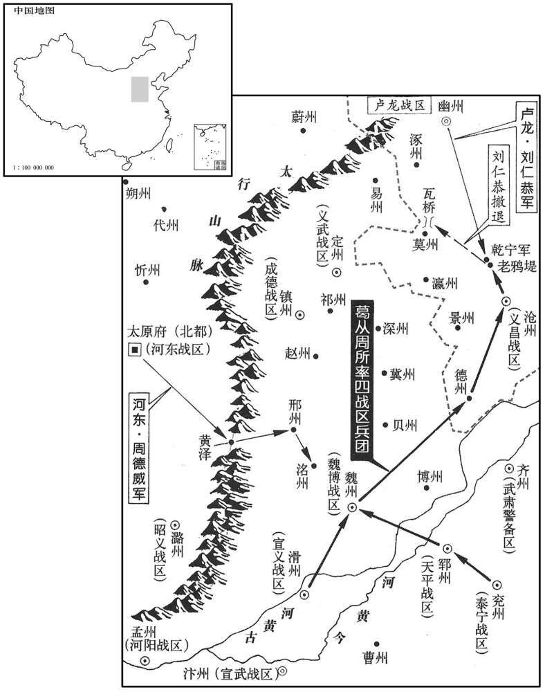
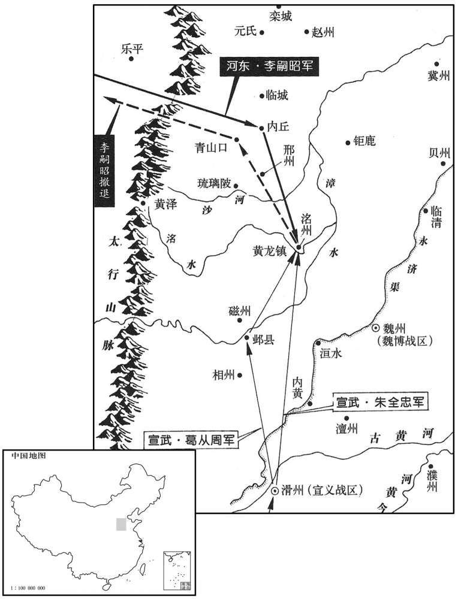
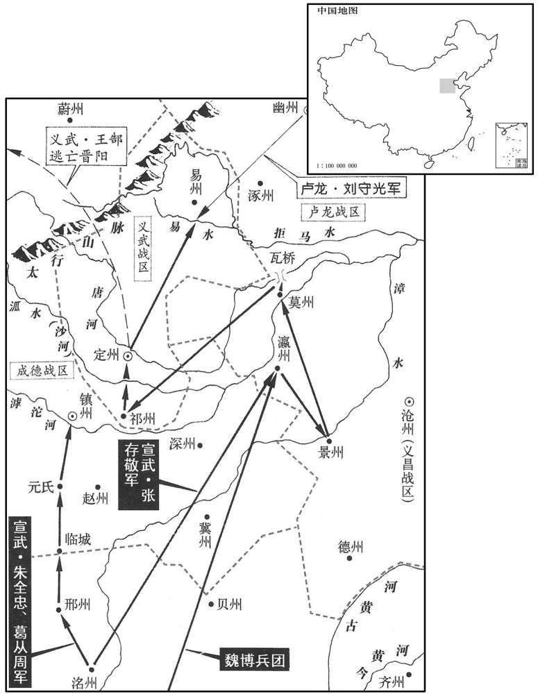
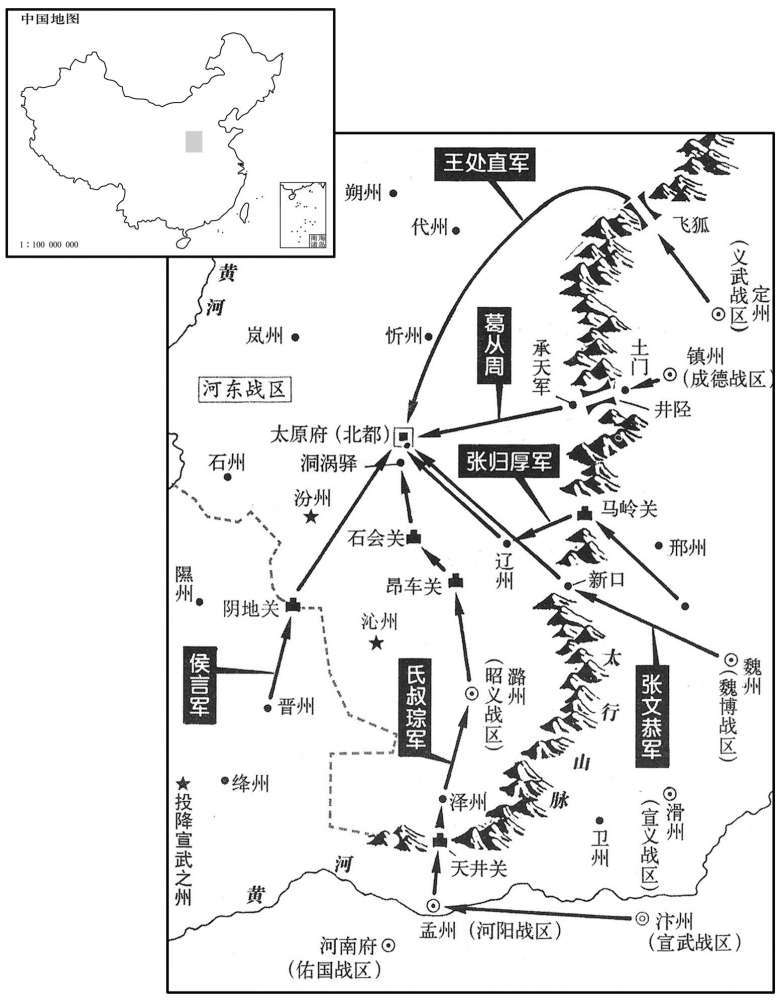
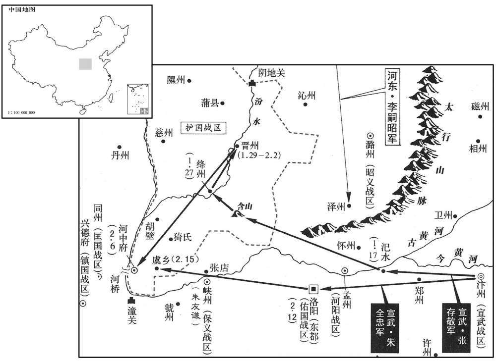
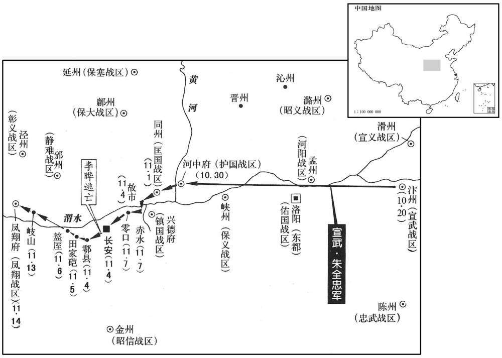
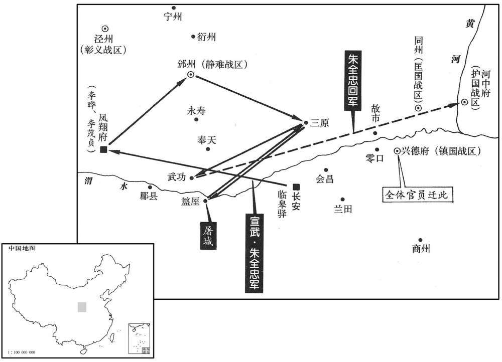

卷次与人物目录 / 卷262
资治通鉴 · 卷第二百六十二【唐纪七十八】
公元900年至公元901年 · 原文、白话与胡三省注
本页按胡注本编排保存全卷内容。白话采用本站所据译本，未可靠对应的内容另列说明；事件标题用于定位，并非原书文字。
本卷共104段原文，104段有译文对应，0段缺译或待核对。
卷第二百六十二【唐纪七十八】起上章涒滩（庚申），尽重光作噩（辛酉），凡二年。
卷首原文与注释
昭宗圣穆景文孝皇帝中之中
公元900年 · 唐昭宗圣穆景文孝皇帝光化三年
光化三年〔（庚申、九○○）〕
本年事件索引（现代整理）
- 康儒攻打睦州，钱镠派从弟钱銶抵御
- 朝廷加封王建为中书令
- 朝廷加封王审知为同平章事
- 朝廷任崔胤为清海节度使
- 李克用征发军民整治晋阳城防，刘延业劝其勿损威望
- 朝廷加封李承庆为同平章事
- 朱全忠派葛从周攻打刘仁恭，围困沧州
- 邕州军乱驱逐节度使李鐬，李鐬借兵平乱
- 朝廷加封王宗涤为同平章事
- 崔胤借朱全忠之力复相，王抟及宦官宋道弼、景务修被贬赐死
- 刘仁恭救沧州遭葛从周击败，李嗣昭攻邢、洺促使汴军撤兵
- 朝廷任孟迁为昭义节度使
- 朝廷任王建兼领东川、信武军都指挥制置使
- 李嗣昭攻取洺州，朱全忠命葛从周反击
- 康儒因粮尽撤出清溪
- 葛从周设伏青山口，大败李嗣昭
- 徐彦若出任清海节度使，劝成汭勿怨朝廷
- 朝廷罢免崔远宰相职务，任裴贽为相
- 朝廷升桂管为静江军，任刘士政为节度使
- 朱全忠进攻镇州，王镕遣周式求和并送质犒军
- 张泽劝王镕乘胜联合河北诸镇对付李克用
- 马殷派李琼等攻取桂、宜、岩、柳、象五州，平定湖南
- 张存敬攻打瀛、景、莫州，刘仁恭势力扩张
- 马殷派兵攻取桂、宜、岩、柳、象五州，平定湖南
- 张存敬攻下祁州并进逼定州，王处直献帛求和
- 张存敬击败刘守光援军，河北诸镇归附朱全忠
- 李克用派李嗣昭攻下怀州，阎宝率军解救河阳
- 崔胤与昭宗密谋诛杀宦官，宦官决定拥立太子
- 昭宗醉后杀宫人，刘季述等趁机发动政变幽禁昭宗、拥立太子
- 刘季述擅自加官赏赐并杀害昭宗宠信之人
- 致仕宰相张浚劝张全义及诸镇匡复唐室
- 李愚致书韩建，斥其坐视昭宗受辱而不勤王
- 朱全忠闻京师政变后南返，李振劝其借机匡复
- 清海节度使薛王李知柔去世
- 杨行密加兼侍中
- 睦州刺史陈晟去世，其弟陈询自称刺史
- 太子即位后藩镇贺表稀少，孙德昭与崔胤密谋诛杀宦官
春，正月，宣州将康儒攻睦州；〔宣州将，田頵所遣将也。〕钱镠使其从弟銶拒之。〔从，才用翻。銶，音求。〕
春季，正月，宣州将领康儒进攻睦州，镇海节度使钱命令他的堂弟钱率兵抵御。
二月，庚申，以西串节度使王建兼中书令。
二月庚申（初二），朝廷任命四川节度使王建兼中书令。
壬申，加威武节度使王审知同平章事。
壬申（十四日），朝廷加封威武节度使王审知为同平章事。
壬午，以吏部尚书崔胤同平章事，充清海节度使。
壬午（二十四日），朝廷任命吏部尚书崔胤为同平章事，充任清海节度使。
李克用大发军民治晋阳城堑，〔惧朱全忠之攻逼也。治，直之翻。〕押牙刘延业谏曰：「大王声振华、夷，宜扬兵以严四境，不宜近治城堑，损威望而启寇心。」克用谢之，赏以金帛。
李克用大举征发军士百姓修理晋阳城的城墙壕沟，押牙刘延业劝告说：“大王的声威震动华夏和四夷，应该分派军队整肃四方边境，不应修治眼前的城墙壕沟，既损害自己的威望，又开启敌人的侵犯之心。”李克用向他表示感谢，并赏给金银绢帛。
夏，四月，加定难军节度使李承庆同平章事。〔难，乃旦翻。〕
夏季，四月，朝廷加封定难军节度使李承庆为同平章事。
朱全忠遣葛从周帅兖、郓、滑、魏四镇兵十万击刘仁恭，〔帅，读曰率。〕五月，庚寅，拔德州，斩刺史傅公和；己亥，围刘守文于沧州。仁恭复遣使卑辞厚礼求援于河东，〔复，扶又翻。〕李克用遣周德威将五千骑出黄泽，攻刑、洺以救之。〔黄泽关，在辽州辽山县黄泽岭。〕
朱全忠派遣葛从周率领兖州、郓州、滑州、魏州四镇的十万军队攻打卢龙节度使刘仁恭，五月庚寅（初四）攻克德州，斩杀德州剌史傅公和，己亥（十三日）把刘守文围困在沧州。刘仁恭派遣使者用卑恭的言辞、丰厚的礼品到河东请求援助。于是，李克用派遣周德威率领五千骑兵出黄泽关，进攻邢州、州来救援刘仁恭。
邕州军乱，逐节度使李鐬；〔懿宗咸通三年，升邕管经略使为岭南西道节度使。鐬，呼会翻。〕鐬借兵邻道讨平之。
邕州军队发生叛乱，驱逐了节度使李。李向领道借兵讨伐平定叛乱。
六月，癸亥，加东川节度使王宗涤同平章事。
六月癸亥（初七），朝廷加封东川度使王宗涤为同平章事。
司空、门下侍郎、同平章事王抟，明达有度量，时称良相。〔以其时言之，称为良相，所谓彼善于此也。〕上素疾宦官枢密使宋道弼、景务修专横，〔横，户孟翻。〕崔胤日与上谋去宦官，〔去，羌吕翻。〕宦官知之。由是南、北司益相憎嫉，各结藩镇为援以相倾夺。抟恐其致乱，从容言于上曰：〔从，千容翻。〕「人君当务明大体，无所偏私。宦官擅权之弊，谁不知之！顾其势未可猝除，宜俟多难渐平，以道消息。〔难，乃旦翻。以道消息者，言恶者以渐杀其势，则久而自消；善者以渐培其根，则久而自长。〕愿陛下言勿轻泄以速奸变。」胤闻之，谮抟于上曰：「王抟奸邪，已为道弼辈外应。」上疑之。及胤罢，〔去年胤罢相，见上卷。〕意抟排己，愈恨之。及出镇广州，遗朱全忠书，具道抟语，〔是年二月，出胤广州，抟语即从容言于上者。遗，唯季翻。〕令全忠表论之。全忠上言：「胤不可离辅弼之地；〔上，时掌翻；下连上同。离，力智翻。〕抟与敕使相表里，同危社稷。」表连上不已。上虽察其情，迫于全忠，不得已，胤至湖南复召还。〔复，扶又翻。〕丁卯，以胤为司空、门下侍郎、同平章事，抟罢为工部侍郎。以道弼监荆南军，务修监青州军。〔监，古衔翻。〕戊辰，贬抟溪州刺史；己巳，又贬崖州司户；道弼长流驩州，务修长流爱州；是日，皆赐自尽。抟死于蓝田驿，道弼、务修死于霸桥驿。〔蓝田驿在蓝田县。霸桥驿在长安城南，近霸桥。〕于是胤专制朝政，势震中外，〔朝，直遥翻。〕宦官皆侧目，不胜其愤。〔为刘季述、韩全诲之乱张本。胜，音升。〕
司空、门下侍郎、同平章事王抟，明白通达，宽宏大量，当时称为良相。昭宗一向痛恨宦官枢密使宋道弼、景务修专断强横，崔胤天天与昭宗商量除去宦官，宦官也知道他们的行动。因此，南司和北司更加相互憎恨嫉妒，各自交结藩镇以为援助，互相倾轧争夺。王抟担心这样会招致变乱，就从容不迫地向唐昭宗进言说：“君主行事，应当致力于申明大局，没有偏心私情。宦官专权的弊病，谁不知道呢！但是他们的势力不可能急速除掉，应当等候各种灾难渐渐平息，通过正当途径逐渐消灭。希望陛下说话不要轻易泄漏，以免加速奸邪小人的变乱。”崔胤听说这话，就向昭宗诬陷王抟说：“王抟奸诈邪恶，已经成为宋道弼等的外应。”昭宗怀疑他的话是否真实。等到崔胤被罢免了宰相职务，就猜想是王抟排斥自己，更加痛恨他。及至崔胤奉命离京师去镇守广州，他就送书信给朱全忠，原原本本地讲了王抟说过的话，让朱全忠进呈表章来辩论是非。朱全忠于是上表说：“崔胤不能离开辅佐陛下的宰相之位，王抟与敕使互为表里，内外勾结，危害国家。”朱全忠的表章接连呈进，继续不停。昭宗虽然察觉其中实情，但迫于朱全忠，也无可奈何，在崔胤行至湖南时又召他回京师。丁卯（十一日），昭宗任命崔胤为司空、门下侍郎、同平章事，王抟被罢免司空、门下侍郎、同平章事降为工部侍郎。命宋道弼出任荆南监军，景务出任青州监军。戊辰（十二日），贬王抟为溪州刺史。己巳（十三日），又贬王抟为崖州司户；宋道弼流放州，景务修流放爱州。当天，三人都被赐令自杀。王抟死在蓝田驿，宋道弼、景务死在霸桥驿。于是，崔胤操纵朝廷政权，势力威震朝野，宦官都怒目而视，非常愤慨痛恨。
刘仁恭将幽州兵五万救沧州，营于干宁军，〔干宁军，在沧州西一百里，盖干宁间始置此军也。宋白曰：干宁军，本古芦台军地，后为冯桥镇，临御河之岸，接沧、幽二州之界。周显德六年，收复关南，始建为干宁军。九域志云：太平兴国七年始置军。〕葛从周留张存敬、氏叔琮守沧州寨，自将精兵逆战于老嵵堤，〔老嵵堤，在干宁军东南。〕大破仁恭，斩首三万级，仁恭走保瓦桥。〔瓦桥，在涿州归义县南，至莫州三十里。宋白曰：瓦桥亦谓之瓦子济桥，在涿州南，易州东。周显德收复三关，以其地控幽、蓟，建为雄州。〕秋，七月，李克用复遣都指挥使李嗣昭将兵五万攻邢、洺以救仁恭，败汴军于内丘。〔复，扶又翻。败，补迈翻；下同。范成大北使录，内丘县至邢州三十五里。考异曰：唐太祖纪年录：「七月，嗣昭攻尧山，至内丘，遇汴军三千，战败之，擒其将李緕。」薛居正五代史后唐纪与纪年录同。惟唐末见闻录，八月二十五日，嗣昭领马步五万取马岭，进军下山东，某日山东告捷，收得洺州。九月二日，嗣昭兵士失利却回。」新纪：「八月，庚辰，陷洺州。」薛史唐纪：「九月，嗣昭弃城归。」盖据此也。按编遗录，八月中云，「前月二十五日，上于球场飨士，忽有大风骤起，占者云贼风。果于是时李进通领蕃寇出攻洺州。」然则嗣昭出兵，乃七月二十五日也。编遗录又曰：「八月，乙丑，出兵救洺州。」乙丑，九日也。又进通败奔归太原在八月，见闻录误。今从编遗录、纪年录、梁纪。〕王镕遣使和解幽、汴，会久雨，朱全忠召从周还。〔沧州下湿，雨水，难以驻军，且欲救邢、洺，故召还。〕
刘仁恭率领五万幽州军队前去援救沧州，在乾宁军扎营。葛从周留下张存敬、氏叔琮守卫沧州营寨，自己率领精锐部队在老鸦堤迎战刘仁恭，大败刘仁恭的军队，斩杀首级三万。刘仁恭逃走，退守瓦桥。秋季，七月，李克用再派都指挥使李嗣昭率领五万军队攻打邢州、州来救援刘仁恭，在内丘打败汴州军队。王熔派遣使者在幽州刘仁恭、汴州朱全忠之间进行调解，适逢长久下雨，朱全忠召回葛从周。


庚戌，以昭义留后孟迁为节度使。
庚戌（二十五日），朝廷任命昭义留后孟迁为昭义节度使。
甲寅，以西川节度使王建兼东川、信武军两道都指挥制置等使。〔时置武信军于遂州。「信武」，当作「武信」。王建兼指挥制置两道，则可以制宗涤、宗佶，盖讽朝廷以此命之。〕
甲寅，（二十九日），朝廷任命西川节度使王建兼东川、信武军两道都指挥制置等使。
八月，李嗣昭又败汴军于沙门河，〔「沙门河」，疑当作「沙河」，即邢州沙河县。考异曰：编遗录：「七月二十五日，李进通领蕃寇出并州来攻洺州。八月乙丑，发大军救应之。上寻亦自领衙军相继北征，翌日，达滑台。军前驰报，洺州已陷，刺史朱绍宗因踰堞，角而伤足，为贼所擒。」唐太祖纪年录：「八月，李嗣昭又遇汴军于沙门河，击而败之。进攻洺州，刺史朱绍宗挈其族夜遁，我师追及，擒之。」唐末见闻录：「八月二十五日，嗣昭进军下山东，某日山东告捷，收得洺州，捉得刺史朱温侄男。」旧纪：「八月，庚辰，嗣昭攻洺州，下之。」薛史梁纪：「八月，河东遣李进通袭陷洺州。」新纪亦在庚辰，乃二十五日也。实录在九月，约奏到。今从编遗录。〕进攻洺州。乙丑，朱全忠引兵救之，未至，嗣昭拔洺州，擒刺史朱绍宗。全忠命葛从周将兵击嗣昭。
八月，李嗣昭又在沙门河打败汴州军队，率军进攻州。乙丑（初十），朱全忠率兵援救州，还没有到达，李嗣昭已攻克州，擒获州刺史朱绍宗。朱全忠命令葛从周率领军队前去攻击李嗣昭。
宣州将庚儒食尽，自清溪遁归。〔康儒是年正月攻睦州。清溪，汉歙县地，后分置新安县，隋改为雉山，文明元年，复为新安，开元颥年，改为还淳，永贞元年，避宪宗名，改曰清溪，属睦州。九域志：县在州西一百六十六里。〕
宣州将领康儒由于军粮吃完，从清溪逃归宣州。
九月，葛从周自邺县渡漳水，营于黄龙镇；朱全忠自将中军三万涉洺水置营。李嗣昭弃城走，〔弃洺州城而走。〕从周设伏于青山口，邀击，大破之。〔考异曰：唐太祖纪年录：「葛从周攻洺州，嗣昭弃城而归。是役也，王合郎、杨师悦陷贼，洺州复为汴有。」唐末见闻录：「九月二日，嗣昭兵士失利却回，被汴州捉到王合郎。」编遗录、薛居正五代史梁纪：「八月，帝遣葛从周屯黄龙镇，亲领中军涉洺而寨，晋人惧而宵遁，洺州复平。」唐纪：「九月，汴帅自将兵三万围洺州，嗣昭弃城而归，葛从周伏青山口，嗣昭军不利。」实录：「九月，嗣昭弃洺州，败于青山口。」今从唐末见闻录、唐纪、实录。按考异所录唐纪，盖后唐纪。〕
九月，葛从周率领军队自邺县渡过漳水，在黄龙镇扎营；朱全忠亲自统帅三万中军渡过水，安营扎寨。李嗣昭舍弃州城逃走，葛从周在青山口布置伏兵，进行拦击，把李嗣昭的军队打得大败而逃。
崔胤以太保、门下侍郎、同平章事徐彦若位在己上，恶之；〔恶，乌路翻。〕彦若亦自求引去。〔徐彦若可谓知遥增击而去之之意者。〕时蕃镇皆为强臣所据，惟嗣薛王知柔在广州，〔知柔镇广州见二百六十卷干宁元年。〕乃求代之。乙巳，以彦若同平章事，充清海节度使。初，荆南节度成汭以澧、朗本其巡属，为雷满所据，〔肃宗至德二载，置荆南节度使，领荆、澧、朗、郢、复、夔、峡、忠、万、归十州，其后增领分隶不一，自雷满据澧、朗，又分置武贞军节度。〕屡求割隶荆南，朝廷不许，汭颇怨望。〔薛巾曰：汭奏请割隶，彦若为相，执不行，汭由是衔之。〕及彦若过荆南，汭置酒，从容以为言。〔从，千容翻。〕彦若曰：「令公位尊方面，自比桓、文，〔成汭进中书令，故称之为令公。〕雷满小盗不能取，乃怨朝廷乎！」汭甚惭。
崔胤因为太保、门下侍郎、同平章事徐彦若的地位在自己之上，从而憎恨他；徐彦若也自己请求引退去职。当时藩镇都被强臣占据，只有嗣薛王李知柔在广州任清海节度使，于是请求让自己代替他。乙巳（二十日），朝廷任命徐彦若以同平章事衔，充任清海节度使。当初，荆南节度成以澧州、朗州本来是他的属地，被雷满占据，屡次请求割出来隶属葬荆南，朝廷不允许，成很是怨恨。等到徐彦若路过荆南，成摆酒招待，从容不迫地说起澧、朗二州的归属旧事。徐彦若说：“令公是一方长官，职位尊崇，向来自比为齐桓公、晋文公，连雷满这样一个小强盗都不能攻取，还要怨恨朝廷吗！”成听了非常惭愧。
丙午，中书侍郎兼吏部尚书、同平章事崔远罢守本官，以刑部尚书裴贽为中书侍郎、同平章事。贽，坦之弟子也。〔裴坦见二百五十一卷懿宗咸通十年。〕
丙午（二十一日），朝廷免除中书侍郎兼史部尚书、同平章事崔远同平章事等职，仍署理本官职务；任命刑部尚书裴贽为中书侍郎、同平章事。裴贽，是裴坦之弟弟的儿子。
升桂管为静江军，以经略使刘士政为节度使。
朝廷将桂州管区升为静江军，任命经略使刘士政为静江军节度使。
朱全忠以王镕与李克用交通，移兵伐之，〔自洺州移兵伐赵。〕下临城，踰滹沱，攻镇州南门，焚其关城。全忠自至元氏，镕惧，遣判官周式诣全忠请和。全忠盛怒，谓式曰：「仆屡以书谕王公，竟不之听！今兵已至此，期于无舍！」式曰：「镇州密迩太原，〔镇州与太原仅隔山耳。九域志：镇州西距太原四百三十里。〕困于侵暴，〔李克用自得河东以来，屡攻赵。〕四邻各自保，莫相救恤，王公与之连和，乃为百姓故也。〔为，于伪翻；下为人、为之同。〕今明公果能为人除害，则天下谁不听命，岂惟镇州！明公为唐桓、文，当崇礼义以成霸业；若但穷威武，则镇州虽小，城坚食足，明公虽有十万之众，未易攻也！况王氏秉旄五代，〔庭凑、元逵、绍鼎、绍懿、景崇及镕为五世，盖绍鼎、绍懿兄弟也，共为一世。〕时推忠孝，人欲为之死，庸可冀乎！」全忠笑揽式袂，延之帐中，曰：「与公戏耳！」〔周式之说朱全忠，犹屈完之说齐桓公也；而当时汴、镇攻守之势，诚亦如此。全忠易怒为笑而延之，以其言中其要害也。〕乃遣客将开封刘捍入见镕，〔客将，主宾客，掌通名赞谒。〕镕以其子节度副使昭祚及大将子弟为质，〔质，音致。〕以文绘二十万犒军；〔文缯，绢之有文者，今谓之花绢。〕全忠引还，以女妻昭祚。〔还，从宣翻，又如字。妻，七细翻。〕
朱全忠因王熔与李克用相互勾结，就从州移兵去讨伐他，攻下临城，渡过滹沱河，攻打镇州南门，把关城烧毁。朱全忠亲自率军到元氏，王熔害怕，忙派判官周式到朱全忠营中请求和解。朱全忠勃然大怒，对周式说：“我屡次送书信去晓谕王公，他竟然不听！现在我兵已经到此，决定不能舍弃！”周式说：“镇州紧靠太原，处在被侵犯损害的境地，四邻各求自我保全，不相互援救体恤，王公与李克用交好联合，是为了百姓免受灾难的缘故。现在您果真能够为人们除去祸害，那么天下谁不听从您的命令，岂止一个镇州！您是大唐的齐桓公、晋文公，应当崇尚礼义，以使成就霸业。如果只是竭尽武力，一味征讨，那么，镇州虽小，但城池坚固，粮食充足，您虽有十万之众，也不容易攻下的！况且王氏执掌兵权已经五代，时常推广忠孝，人人想要为王氏去死，难道可以希望攻下吗！”朱全忠笑着挽起周式的衣袖，请进营帐之中，说：“与您开玩笑哩！”于是，朱全忠派遣客将开封人刘捍进入镇州城内见王熔，王熔将他的儿子节度副使王昭祚及大将子弟作为人质，以花绢二十万犒劳朱全忠的军队。朱全忠领兵返回，并将女儿嫁给王昭祚为妻。
成德判官张泽言于王镕曰：「河东，勍敌也，〔勍，渠京翻。〕今虽有朱氏之援，譬如火发于家，安能俟远水乎！彼幽、沧、易定，犹附河东，不若说朱公乘胜兼服之，〔幽，刘仁；恭沧，刘守文；易定，王郜。说，式芮翻；下同。〕使河北诸镇合而为一，则可以制河东矣。」镕复遣周式往说全忠。〔复，扶又翻。〕全忠喜，遣张存敬会魏博兵击刘仁；恭甲寅，拔瀛州；冬，十月，丙辰，拔景州，执刺史刘仁霸；辛酉，拔莫州。
成德判官张泽向王建议说：“河东李克用是个劲敌，现在虽然有朱氏的援助，但譬如家中起火，哪里能够等待远水呢！那幽州刘仁恭、沧州刘守文、易州定州王郜，仍然依附河东，不如劝说朱公乘胜一并降服他们，使河北诸镇合而为一，就可以制服河东了。”王熔再派周式前去劝说朱全忠。朱全忠听后很高兴，就派遣张存敬会同魏博的军队前去攻打刘仁恭。甲寅（二十九日），张存敬等攻克瀛州；冬季，十月丙辰（初二），攻占景州，捉住了景州刺史刘仁霸；辛（初七），又夺取了莫州。
静江节度使刘士政闻马殷悉平岭北，〔湖南之地在五岭之北。〕大惧，遣副使陈可璠屯全义岭以备之。〔璠，孚袁翻。武德四年，分始安置临源县，大历三年，更名全义，属桂州。国朝改全义为兴安县，在桂州东北一百五十里。〕殷遣使修好于士政，〔好，呼到翻。〕可璠拒之；殷遣其将秦彦晖、李琼等将兵七千击士政。湖南军至全义，士政又遣指挥使王建武屯秦。〔港成大桂海虞衡志曰：秦城在桂林城北八十一里，相传以为始皇发戍五岭之地。城在湘水之南，瀜、漓二水之间，遗址尚存，石甃亦无恙。城北二十里有严关，群山环之，鸟道不可方轨。秦取百粤，以其地为桂林、象郡，而戍兵乃止湘南。盖岭有喉衿在是，稍南又不可以宿兵也。〕可璠掠县民耕牛以犒军，县民怨之，请为湖南乡导，〔犒，苦到翻。乡，读曰向。〕曰：「此西南有小径，距秦城纔五十里，仅通单骑。」彦晖遣李琼将骑六十、步兵三百袭秦城，中宵，踰垣而入，擒王建武，比明，复还，诉之以练，造可璠壁下示之之，〔比，必利翻，及也。诉，充夜翻，絷缚也。造，七道翻。〕可璠犹未之信；斩其首；斩其首，投壁中，桂人震恐。琼因勒兵击之，擒可璠，降其将士二千，皆杀之。引兵趣桂州，〔趣，七喻翻；下同。〕自秦城以南二十余壁皆望风奔溃，遂围桂州；数日，士政出降，〔干宁二年，刘士政袭据桂州，至是而败。〕桂、宜、岩、柳、象五州〔宜州之地，秦属象郡，汉属交趾、日南二郡界，后没于蛮。唐初，开置粤州，干封中，更曰宜州。〕皆降于湖南。〔马殷又兼有桂管。考异曰：唐烈祖实录、新唐书本纪、路振九国志、楚世家皆云光化二年殷克桂州。马氏行年记及王举大定录云天复元年。惟曹衍湖湘马氏故事云：「天复甲子，宣晟自安州入桂州。天佑四年丁卯，十二月，收岭北七州；明年十月，平桂州。」差缪极甚。新唐书方镇表：「光化二年，升桂管经略使为静江节度使。」而本纪：「干宁二年，安州防御使宣晟陷桂州，静江军节度使周元静部将刘士政死之。」岁月既已倒错，又以士政为元静部将同死，尤为乖误。今据武安节度掌书记林崇禧撰武威王庙碑云：「我王临位五岁而桂林归款。」自干宁三年至光化三年，五年矣，又与实录合，故从之。〕马殷以李琼为桂州刺史；未几，〔几，居岂翻。〕表为静江节度使。
静江节度使刘士政听说马殷全部平定了岭北，非常害怕，派副使陈可率军领驻扎在全义岭防备马殷侵犯。马殷派遣使者向刘士政谋求和好，陈可拒绝了他。于是，马殷派遣他的部将秦彦晖、李琼等率领七千军队，前去攻打刘士政。马殷的湖南军队抵达全义岭，刘士政又派遣指挥使王建武驻守秦城。陈可掠虏县民的耕牛来犒劳将士，县民非常怨恨他，请求做湖南军队的向导，说：“这西南有小路，距离秦城才五十里，路径狭窄仅能单骑通过。”秦彦晖派遣李琼率领骑兵六十、步兵三百突袭秦城，半夜里越过城墙而入，擒住王建武，等到天明又回来，用布带将王建武捆缚起来，到陈可的营垒下给他看视。陈可看见后还不相信是王建武，李琼又命斩下王建武的脑袋，投入陈可的营垒之中，桂州军队一片震惊恐慌。李琼趁机率兵发起攻击，擒获可，并将投降的二千将士全部杀死。然后，李琼等率军奔赴桂州，自秦城以南二十余座桂州营垒全都望风逃散，于是将桂州包围。过了几天，刘士政出城投降，桂、宜、岩、柳、象五州全都归降了湖南。马殷任命李琼为桂州刺史；不久，马殷又上表请朝廷任命李琼为静江节度使。
张存敬攻刘仁恭，下二十城，将自瓦桥趣幽州，道泞不能进；〔泞，乃定翻，泥淖也。〕乃引兵西攻易定，辛巳，拔祁州，〔景福二年，王处存表以定州无极、深泽二县置祁州。〕杀刺史杨约。
张存敬攻打刘仁恭，连克二十个城池，将要从瓦桥驿奔赴幽州，因道路泥泞不能前进，于是率领军队向西进攻易州。辛巳（二十七日），张存敬攻克祁州，杀死祁州刺史杨约。
癸未，以保义留后朱谦为节度使。〔朱全忠请之也。〕
癸未（二十九日），朝迁任命保义留后朱友谦为保义节度使。
张存敬攻定州，义武节度使王郜〔郜，居号翻。〕遣后院都知兵马使王处直将兵数万拒之。〔唐中世以来，方镇多置后院兵。处，昌吕翻。〕处直请依城为栅，俟其师老而击之。孔目官梁汶曰：「昔幽、镇兵三十万攻我，〔汶，音问，薛史作「问」。僖宗光启元年，幽州李可举、镇州王镕攻王处存，事件二百五十六卷。〕于时我军不满五千，一战败之。〔败，补迈翻。〕今存敬兵不过三万，我军十倍于昔，柰何示怯，欲依城自固乎！」郜乃遣处直逆战于沙河，〔沙河，在新城北，望都县南。〕易定兵大败，死者过半，余众拥处直奔还。甲申，王郜弃城奔晋阳，〔王处存素睦于晋，又婚姻也，故郜奔之。〕军中推处直为留后。存敬进围定州，丙申，朱全忠至城下；处直登城呼曰：〔呼，火故翻。〕「本道事朝廷甚〔【章：十二行本「甚」作「尽」；乙十一行本同；孔本同；张校同。】〕忠，〔义武自张孝忠以来，事朝廷最为忠顺。〕于公未尝相犯，何为见攻﹖」全忠曰：「何故附河东﹖」对曰：「吾兄与晋王同时立勋，〔谓王处存与李克用同平黄巢立功。〕封疆密迩，〔自定州出飞狐，即河东之境。〕且婚姻也，修好往来，乃常理耳；〔好，呼到翻。〕请从此改图。」全忠许之。〔定州城池高深，朱全忠知不可猝攻而拔，故许其和。〕乃归罪于梁汶而族之，以谢全忠，以缯帛十万犒师；全忠乃还，仍为处直表求节钺。〔为，于伪翻。〕处直，处存之母弟也。
张存敬进攻定州，义武节度使王郜派遣后院都知兵马使王处直率兵数万进行抵抗。王处直请依城建筑栅栏，等到张存敬的军队疲乏懈怠，再发起攻击。孔目官梁汶说：“从前幽州、镇州的三十万军队攻我，当时我军不满五千，一战便打败了他们。现在张存敬的军队不过三万，我军是当年的十倍，怎么表示怯懦，想要依城自我固守呢！”王郜于是派遣王处直率兵在沙河迎战，结果易定军队被打得大败，死者过半，乘余的将士簇拥着王处直逃奔而回。甲申（三十日），王郜弃城投奔晋阳，军中将士推举王处直为留后。张存敬进兵包围定州，丙申（疑误），朱全忠到定州城下；王处直登城高呼道：“本道侍奉朝廷竭诚尽忠，对您未曾冒犯，为什么被攻击？”朱全忠说：“依附河东是什么缘故？”王处直回答说：“我哥哥与晋王一同讨平黄巢立功，辖地疆界贴近，并且是儿女亲家，谋求和好，互相往来，乃是通常情理；请从此以后改变主意。”朱全忠应允与他和好。于是，王处直把罪过归在梁汶身上并杀了他的全家，用来告谢朱全忠，又拿出绢帛十万犒劳朱全忠的军队。朱全忠于是率兵回去，并奏进表章请求授予王处直节度使。王处直是王处存的同母弟弟。

刘仁恭遣其子守光将兵救定州，军于易水之上；〔易水，在易州遂城县界。遂城县于宋为安肃军。昔燕太子丹送荆轲于易水之上，即此地。〕全忠遣张存敬袭之，杀六万余人。由是河北诸镇皆服于全忠。〔史言河北诸镇皆羁服于全忠，全忠不能并有其地也。〕
刘仁恭派遣他的儿子刘守光率兵救援定州，驻扎在易水之上；朱全忠派遣张存敬袭击刘守光，杀死六万余人。从此，河北诸镇全都降服了朱全忠。
先是王郜告急于河东，〔先，悉荐翻。〕李克用遣李嗣昭将步骑三万下太行，攻怀州，拔之，〔行，户刚翻。〕进攻河阳。河阳留后侯言不意其至，狼狈失据，嗣昭坏其羊马城。〔坏，音怪。城外别立短垣以屏蔽，谓之羊马城。〕会佑国军将阎宝引兵救之，〔河南府佑国军，东北至河阳八十五里。〕力战于壕外，河东兵乃退。宝，郓州人也。
在这之前，王郜向河东告急，李克用派遣李嗣昭率领步兵、骑兵三万人马，直下太行，进攻并拔取怀州，进而攻打河阳。河阳留后侯言没想到河东军队突然到达，十分狼狈，窘迫无依。李嗣昭破坏了河阳城外的羊马城。适逢佑国军将领阎宝领兵前来救援，在护城河外奋力战斗，河东军队才退走。阎宝是郓州人。
初，崔胤与帝密谋尽诛宦官，及宋道弼、景务修死，〔事件上六月。〕宦官益惧。上自华州还，〔光化元年，上还自华州，事见上卷。还，从宣翻，又如字。〕忽忽不乐，〔乐，音洛。〕多纵酒，喜怒不常，左右尤自危。于是左军中尉刘季述、右军中尉王仲先、枢密使王彦范、薛齐偓等阴相与谋曰：「主上轻挑多变诈，难奉事；〔佻，土雕翻。〕专听任南司，〔时宦官谓之北司，谓南牙百官为南司。〕吾辈终罹其祸。不若奉太子立之，尊主上为太上皇，引岐、华兵为援，〔岐，李茂贞；华，韩建。华，户化翻。〕控制诸藩，谁能害我哉！」
当初，崔胤与唐昭宗秘密谋划全部杀死宦官，等到宋道弼、景务死后，宦官更加恐惧。唐昭宗自华州回到京城以后，精神恍惚，抑郁不乐，常常纵情饮酒，喜怒无常，左右的人尤其人人自危。于是，左军中尉刘季述、右军中尉王仲先、枢密使王彦范、薛齐等暗中共同商量说：“主上轻浮而多机变欺诈，难于侍奉；并且凡事专听任宰相办理，我等终究要遭受他的祸害。不如立太子为皇帝，尊主上为太上皇，招岐州李茂贞、华州韩建的军队为援助，控制各个藩镇，谁还能加害我们呢！”
十一月，上猎苑中，〔禁苑，在宫城北。〕因置酒，夜，醉归，手杀黄门、侍女数人。明旦，日加辰巳，宫门不开。季述诣中书白崔胤曰：「宫中必有变，我内臣也，得以便宜从事，请入视之。」乃帅禁兵千人破门而入，〔帅，读曰率。〕访问，具得其状。出，谓胤曰：「主上所为如是，岂可理天下！废昏立明，自古有之，为社稷大计，非不顺也。」胤畏死，不敢违。庚寅，季述召百官，陈兵殿庭，〔陈兵以胁百官也。〕作胤等连名状，请太子监国，以示之，使署名；胤及百官不得已皆署之〔监，古衔翻。〕上在乞巧楼，〔按刘季述传，乞巧楼在思玄门内，近思政殿。〕季述、仲先伏甲士千人于门外，〔即宣化门外。〕与宣武进奏官程岩等十余人入请对。季述、仲先甫登殿，将士大呼，〔呼，火故翻。〕突入宣化门，至思政殿前，逢宫人，辄杀之。上见兵入，惊角床下，起，将走，季述、仲先掖之令坐。宫人走白皇后，后趋至，拜请曰：「军容勿惊宅家，有事取军容商量。」〔量，音良。今人谓议事为商量。〕季述等乃出百官状白上，曰：「陛下厌倦大宝，中外群情，愿太子监国，请陛下咻颐东宫。」〔颐，养也；言于少阳院自保也。〕上曰：「昨与卿曹乐饮，不觉太过，〔乐，音洛。〕何至于是！」对曰：「此非臣等所为，皆南司众情，不可遏也。愿陛下且之东宫，〔之，往也。〕待事小定，复迎归大内耳。」后曰：「宅家趣依军容语！」〔趣，读促。〕即取传国宝以授季述，宦官扶上与后同辇，嫔御侍从者纔十余人，〔从，才用翻。〕适少阳院。季述以银檛画地数上曰：〔檛，侧加翻。数，所具翻，俗从上声。〕「某时某事，汝不从我一言，其罪一也。」如此数十不止。〔历数之，至数十不止。〕乃手锁其门，镕铁锢之，〔锢，音固。〕遣左军副使李师虔将兵围之，上动静辄白季述，穴墙以通饮食。凡兵器针刀皆不得入，上求钱帛俱不得，求纸笔亦不与。时大寒，嫔御公主无衣衾，号哭闻于外。〔号，户刀翻。闻，音问。〕季述等矫诏令太子监国，迎太子入宫。〔考异曰：按此月乙酉朔，己丑五日，庚年录，先云六日，后云七日，尤误也。崔胤所恃者昭宗耳，季述议废立，安肯即从之！补录、纪年录言胁之以兵，是也。唐补纪云「皇后穴墙取太子」，又云「令旨宣告大臣与社稷为主」，又云「后白军容，令圣上养疾。」皆程匡柔为宦者讳耳，不可信也。〕辛卯，矫诏令太子嗣位，更名缜。〔更，工衡翻；下同。缜，止忍翻。〕以上为太上皇，皇后为太上皇后。甲午，太子即皇帝位，更名少阳院曰问安宫。
十一月，唐昭宗在禁苑中打猎，因此摆酒纵饮，夜里大醉回宫，亲手杀死宦官、侍女数人。天明，已经是辰巳左右，宫门还没有开。刘季述到中书省告诉崔胤说：“宫中一定有了变故，我是内臣，能够根据实际情况自行斟酌处理，请进宫察看发生了什么事情。”于是，率领宫禁警卫一千人破门而入，经过访查讯问，获得具体情况。刘季述出来对崔胤说：“主上所为如此，岂可管理国家！废黜昏君，拥立明主，自古就有这样做的，为了国家大计，这样做不是叛逆。”崔胤害怕被杀，不敢违抗。庚寅（初六），刘季述召集文武百官到来，在殿庭布置了军队，起草崔胤等请太子代管国事的联名状，出示给文武官员看，让他们签名。崔胤及文武百官不得已，都签了名。昭宗在乞巧楼，刘季述、王仲先在门外埋伏一千名全武装的将士，与宣武进奏官程岩等十余人进楼请求奏对。刘季述、王仲先刚登殿，将士大声呼喊，突然冲入宣化门，到思政殿前，遇到宫人就杀。昭宗看见军队闯入，被惊吓得掉到床下，起来将要逃走，刘季述、王仲先架着让他坐下。宫人跑去禀报皇后，何皇后快步走来，向刘季述等拜请说：“军容使不要惊吓皇上，有事求军容使商量。”刘季述等于是拿出文武百官的联名状，禀告昭宗说：“陛下厌倦帝位，内外群情希望太子代行管理国家事务，请陛下在东宫颐养天年。”昭宗说：“昨天与卿等玩乐饮酒，不觉喝得太多。怎么能弄到这种地步！”刘季述等回答说：“这联名状不是我等所定，都是南司百官群情激昂，不能阻止啊！请陛下暂且前去东宫，等到事情稍微安定，再迎陛下回归正宫来罢了。”何皇后说：“皇上赶快依从军容使的话！”立即取出传国玺印授与刘季述。宦官扶持昭宗与何皇后同乘一车，与嫔御侍从十余人往少阳院去。刘季述用银画地，数落昭宗说：“某时某事，你不听从我的话，这是一条罪。”这样数十下还不停止。于是，刘季述亲手锁了少阳院的门，熔化铁水将锁灌实，派遣左军副使李师虔带兵将少阳院包围，昭宗一有动静就禀报刘季述，凿出墙洞来递送饮食。凡是兵器针刀都不能入内，昭宗要些钱帛全不成，要些纸笔也不给。当时天气十分寒冷，嫔御公主没有衣被，号哭之声传到墙外。刘季述等假传昭宗的诏书，令太子代管国事，迎太子入宫。辛卯（初七），刘季述等又假传昭宗的语书，令太子继承皇位，更名李缜。于是，以昭宗为太上皇，何皇后为太上皇后。甲（初十），太子即皇帝位，把少阳院改名叫问安宫。
季述加百官爵秩，与将士皆受优赏，欲以求媚于众。杀睦王倚；〔倚，上弟也。〕凡宫人、左右、方士、僧、道为上所宠信者，皆榜杀之。〔榜，音彭。〕每夜杀人，昼以十车载尸出，一车或止一两尸，欲以立威。将杀司天监胡秀林，〔武德四年，改太史监曰太史局，有令、有丞。高宗龙朔二年，改太史局曰秘书阁，局令曰秘书阁郎中。武后光宅元年，改太史局曰浑天监，俄改曰浑仪监，长安二年，复曰太史局。中宗景龙二年，改太史局曰太史监，干元元年，改曰司天台。置监一人，正三品，掌察天文，稽历数。〕秀林曰：「军容幽囚君父，更欲多杀无辜乎！」季述惮其言正而止。季述欲杀崔胤，而惮朱全忠，但解其度支盐铁转运使而已。〔【章：十二行本「已」下有「崔胤密致书全忠，使兴兵图返正」十三字；乙十一行本同；张校同；退斋校同；孔本同，「返」作「反」。考异曰：旧传：「刘季述畏朱全忠之强，不敢杀崔胤，但罢知政事，落使务，守本官而已。胤复致书于全忠，请出师返正，故全忠令张存敬急攻晋、绛、河中。」按旧纪、新纪、新宰相表，此际皆无胤罢相事。全忠攻晋、绛、河中，乃在明年返正后，今不取。〕
刘季述给百官加封爵位，参与将士都受到优厚的赏赐，想要以此向众人讨好。杀了睦王李倚，凡被唐昭宗宠信的宫人、侍臣、方士、僧侣、道人等，都用木棍打死。每夜所杀之人，白天用十辆车载着尸体送出，一车有时只一两具尸体，想要用此树立淫威。刘季述等将要杀司天监胡秀林，秀林说：“军容使幽禁君父，还想要多杀无辜吗！”刘季述畏惧他话的刚正而住手。刘季述想要杀崔胤，但畏惧朱全忠，于是就只解除了崔胤的度支盐铁转运使而已。
左仆射致仕张浚在长水，〔干宁三年，上复欲相张浚，以李克用言而止，浚遂致仕居长水。宋白曰：长水，本汉卢氏县地，后魏延昌二年，分卢氏东境库谷已西、沙渠谷已东，为南陕县。北有陕县，故名南陕。废帝元年，改为长渊，以县东洛水长渊为名。唐以犯唐祖讳，改名长水。九域志：在河南府西二百四十里。〕见张全义于洛阳，劝之匡复；又与诸藩镇书劝之。
左仆射张浚退休后住在长水，他到洛阳拜见张全义，劝他匡复君位；又给各藩镇写信进行劝说。
进士无棣李愚客华州，上韩建书，略曰：「仆每读书，见父子君臣之际，有伤教害义者，恨不得肆之市朝。〔上，时掌翻。朝，直遥翻；下并同。〕明公居近关重镇，〔盖谓华州控扼潼关，距关为近。〕君父幽辱月余，坐视凶逆而忘勤王之举，仆所未谕也。仆窃计中朝辅弼，虽有志而无权；外镇诸侯，虽有权而无志。惟明公忠义，社稷是依。往年车辂播迁，号泣奉迎，累岁供馈，再复庙、朝，〔谓干宁三年建〔迎〕上驻跸华州，光化元年归长安也。庙、朝，谓宗庙、朝廷也。号，户刀翻。〕义感人心，至今歌咏。此时事势，尤异前日；明公地处要冲，〔处，昌吕翻。〕位兼将相。自宫闱变故，已涉旬时，〔旬时，即旬日也。〕若不号令率先以图反正，迟疑未决，一朝山东侯伯唱义连衡，〔衡，读曰横。〕幸行而西，明公求欲自安，其可得乎！〔言山东勤王之师若至华州，韩建亦不得安其位矣。其后朱全忠攻岐，遂徙建许州，卒如李愚之言。〕此必然之势也。不如驰檄四方，谕以逆顺，军声一振，则元凶破胆，旬浃之间，二竖之首传于天下，〔旬浃，谓一日、二日至于十日。浃，即协翻。二竖，谓刘季述、王仲先。〕计无便于此者。」建虽不能用，厚待之。愚坚辞而去。
进士无棣人李愚客居华州，给韩建上书，大要说：“我每读书，见父子君臣之间，有伤教化害礼义的，恨不得将他杀死并陈尸于市。韩公居守临近潼关的重镇，皇上被幽禁受辱一月有余，坐视凶恶叛逆而不出兵救援王室，我实在不能理解。我私下算计，朝中的辅弼之臣，虽然有志向，但没有实权；京外的藩镇强臣，虽然有实权，但没有志向。只有韩公忠贞仁义，是国家的依靠。往年皇上流离迁徒，您痛哭流涕，奉迎皇上驻跸华州，多年供给馈赠，重新恢复宗庙、朝廷，义感人心，至今歌颂。现在的事态形势，尤其与往日不同：韩公地处要冲，位兼将相。自宫中发生变故，至今已过十天，如果不首先号令天下带头谋划归复正道，迟疑不决，一旦山东侯伯举义联合，发兵西进，韩公想要求得自安，难道能够得到吗！这是必然之势。不如迅速传檄四方，使他们知道逆顺，这样，军队声威一振，首恶丧胆，十天左右，刘季述、王仲先两个内宫小臣的脑袋将传递于天下，没有比这更为便利的计策了。”韩建虽然不采用李愚的计策，却给他优厚的待遇。李愚坚决推辞而去。
朱全忠在定州行营，闻乱，于未，南还；十二月，戊辰，至大梁。季述遣养子希度诣全忠，许以唐社稷输之；又遣供奉官李奉本以太上皇诰示全忠。〔刘季述矫为之诰也。〕全忠犹豫未决，会僚佐议之，或曰：「朝廷大事，非藩镇所宜预知。」天平节度副使李振独曰：「王室有难，〔难，乃旦翻。〕此霸者之资也。今公为唐桓、文，安危所属。〔李振以齐桓、晋文谄朱全忠。属，之欲翻。〕季述一宦竖耳，乃敢囚废天子，公不能讨，何以复令诸侯！〔复，扶又翻。〕且幼主位定，则天下之权尽归宦官矣，是以太阿之柄授人也。」全忠大悟，即囚希度、奉本，遣振如京师诇事。〔诇，火迥翻，又翾正翻。〕既还，又遣亲吏蒋玄晖如京师，与崔胤谋之；又召程岩赴大梁。〔考异曰：薛居正五代史李振传：「十一月，太祖遣振入奏于长安，邸吏程岩白振曰：『刘中尉命其侄希贞来计大事。』既至，岩乃先启曰；『主上严急，内官忧恐，左中尉欲行废黜，敢以事告。』振顾希贞曰：『百岁奴事三岁主，觅国不义，废君不祥，非敢闻也。况梁王以百万之师匡辅子，幸熟计之！』希贞大沮而去。振复命，刘季述果作乱，程岩率诸道邸吏牵帝下殿以立幼主。振至陕，陕已贺矣。护军韩彝范言其事，振曰：『懿皇初升，遐韩中尉杀长立幼以利其权，遂乱天下；今将军复欲尔邪！』彝范，即文约孙也，由是不敢言。」编遗录：「上虽闻其事，未知摭实，但怀愤激。丁未，上离定州军前，十二月，戊辰，达大梁，欲潜谋返正，乃遣李振侦视其事。振回，益祥其宜也，寻驰蒋玄晖与崔胤密图大义。」薛史梁纪：「季述幽昭宗，立德王裕，为帝，仍遣其养子希度来言，愿以唐之神器输于帝。时帝方在河朔，闻之，遽还于汴，大计未决。会李振自长安使回，因言于帝云云。帝悟，因请振复使于长安，与时宰潜谋返正。」按李述废立之前，李振若已尝立异，今岂敢复入长安与崔胤谋返正乎！今从编遗录。（注曰：贞明中，史臣李琪、张衮、郗殷象、冯锡嘉修撰太祖实录，事多漏略，敬翔别纂成三十卷补其阙，号曰大梁编遗录。）又按唐太祖纪年录及旧张浚传皆云浚劝诸藩匡复，而梁实录及李振传皆云浚劝全忠附中官，与纪年录及旧传相违，恐梁实录误，振传据实录也。唐补纪曰：「自监国居位，将及五旬，笺表不来，朝野惊虞，亢旱时多，虹蜺背璚。崔胤其不祥，便谋内变，潜行书檄于关外，播扬辞舌于街衢。朱全忠封崔胤檄书并手札等与季述云：『彼已翻覆，早宜别图。』无何，季述以此书示于崔胤曰：『比来同匡社稷，却为鬬乱藩方，不审相公何至于此！』胤唯云『无此事，遭人反图。刻蜡伪名，自古乃有。军容若行怪怒，则乞府存家族。』季述乃与言，哲相保始终。胤其夜便致书谢全忠云：『昨以丹诚谘挠尊听，却蒙封示左军刘公，其人已知意旨。今日与胤设盟，不相损害，然远托令公为主，方应保全，兼送女仆二人，细马两匹。』全忠览书大诟曰：『刘季述，我与伊同王事十二三年，兄弟如故，特令报渠；不能自谋，却示崔相，道我两头三面，实是难容！我若不杀此公，不姓朱也！』乃掷于地，囚其使者，走一健步直申崔公，从兹与大梁同谋大事。」按崔胤向来内倚昭宗，外挟全忠，与宦官为敌。今昭宗既废，胤所以得未死者，以与全忠亲密故也，全忠安肯以书示季述！季述恨胤深入骨髓，若得此书，立当杀胤，岂肯复以示胤而与之盟誓也！此殊不近人情，皆由程匡柔党宦官，疾胤之乱耳。〕
朱全忠在定州巡视军营，听到京城发生变乱，于丁未（二十三日）南下返回，十二月戊辰（十四日）到达大梁。刘季述派养子刘希度到大梁晋见朱全忠，答应把大唐社稷献纳给他；又派供奉官李奉本拿太上皇唐昭宗的诰命给朱全忠看。朱全忠犹豫未决，会同僚佐商议，有的说：“朝廷大事，不是藩镇应当于预的。”唯独天平节度副使李振说：“王室有难，这是成就霸业的资本。现在您是大唐的齐桓公、晋文公，安危所系。刘季述不过是一个宦官罢了，竟敢囚禁废黜天子，您不能讨伐，用什么再号令诸侯！况且幼主君位确定，那么国家政权就全归宦官了，这是把太阿剑柄交给他们啊！”朱全忠大悟，立即把刘希度、李奉本囚禁，派李振到京师去探察事态。李振回到大梁以后，朱全忠又派遣新吏蒋玄晖至京师，与崔胤密谋策划，又召宣武进奏官程岩赶赴大梁。
清海节度使薛王知柔薨。
清海节度使薛王李知柔去世。
是岁，加杨行密兼侍中。
这年，淮南节度使杨行密加封兼侍中。
睦州刺史陈晟卒，弟询自称刺史。
睦州刺史陈晟死，他的弟弟陈询自称剌史。
太子即位累旬，藩镇笺表多不至。王仲先性苛察，素知左、右军多积弊，乃为中尉，钩校军中钱谷，得隐没为奸者，痛捶之，〔捶，止橤翻。〕急征所负；将士颇不安。有盐州雄毅军使孙德昭为左神策指挥使，自刘季述废立，常愤惋不平。〔捥，乌贯翻。〕崔胤闻之，遣判官石戬与之游。〔判官，度支盐铁判官也。戬，即浅翻。〕德昭每酒酣必泣，戬知其诚，乃密以胤意说之曰：「自上皇幽闭，中外大臣至于行间士卒，孰不切齿！〔说，式芮翻。行，户刚翻。〕今反者独季述、仲先耳，公诚能诛此二人，迎上皇复位，则富贵穷一时，忠义流千古；苟狐疑不决，则功落他人之手矣！」德昭谢曰：「德昭小校，〔校，户教翻。〕国家大事，安敢专之！苟相公有命，不敢爱死。」戬以白胤。胤割衣带，手书以授之。德昭复结右军清远都将董彦弼、周承诲，〔清远都，亦神策五十四都之一。复，扶又翻。〕谋以除夜伏兵安福门外以俟之。
太子即位几十天，各藩镇例应奏进的笺表大多不到。右军中尉王仲先性情苛刻细察，向来知道左、右军积弊很多，等到担任中尉，查考校核军中钱谷，查到隐没钱谷为奸的人，就痛加鞭打，紧急征索所欠；将士很不安宁。有盐州雄毅军使孙德昭，担任左神策指挥使，自刘季述废黜唐昭宗、强立太子之后，经常愤惋不平。崔胤听说后，派遗度支盐铁判官石戬与孙德昭交游。孙德昭每次饮酒到酣畅时，一定哭泣，石戬知道他诚实，就秘密按照崔胤的意思劝说他，说：“自太上皇幽禁以来，内外大臣以至于军队士卒，谁不咬牙切齿！如今造反的只有刘季述、王仲先二人而已，您如果能杀死这两个人，迎太上皇复位，就会富贵穷极一时，忠义流传千古；如果犹豫不决，就要功落他人之手了！”孙德昭叩谢说：“德昭不过是个小军官，国家大事，岂敢专擅！如果相公有命令，德昭不敢惜死。”石戬把孙德昭的情况禀报了崔胤。崔胤割下衣带，亲笔书写命令，交给孙德昭。孙德昭又结交右军清远都将董彦弼、周承诲，商量在除夕夜里伏兵安福门外，俟机行事。
公元901年 · 唐昭宗圣穆景文孝皇帝天复元年
天复元年〔（辛酉、九○一）是年四月，方改元。〕
上传原文的注释括号有异常，字符原样保留；无法可靠划分的段落默认全文显示。
本年事件索引（现代整理）
- 孙德昭等诛杀王仲先、刘季述等人，迎昭宗复位
- 崔胤升任司徒，坚辞不受
- 朱全忠因刘季述等被杀而惩处程岩，斩杀刘希度等人
- 朝廷任周承诲、董彦弼为节度使并赐李姓
- 朱全忠晋封东平王
- 昭宗规定枢密使须待宰相奏事后方可入殿，并赐死李师度、徐彦孙
- 李茂贞入朝，受封岐王并加尚书令、侍中
- 昭宗拒绝让崔胤、陆扆统领禁军，改由宦官担任两军中尉
- 李茂贞返镇，留下三千兵驻京师宿卫
- 朱全忠遣张存敬袭取晋、绛二州，围困河中
- 王珂连续向李克用告急，李克用被汴军阻隔无法救援
- 李嗣昭攻下泽州
- 张存敬抵达河中围城，王珂遣使请降
- 朱全忠接受王珂请降，迁王珂全族至大梁
- 李克用遣使厚礼求和，朱全忠仍决意攻河东
- 朝廷任王溥、裴枢为宰相
- 朝廷追赠睦王李倚为恭哀太子
- 朝廷加封刘仁恭、罗绍威为侍中
- 朱全忠率六路大军攻李克用，连取泽、潞等州
- 昭宗谒太庙，大赦天下并改元
- 崔胤取消禁军卖酒曲特权，收紧宦官财源
- 王宗涤因病请求退职，王建任王宗裕为留后
- 汴军围攻晋阳，李克用坚守待汴军因久雨粮乏撤退
- 朱全忠兼领宣武、宣义、天平、护国四镇
- 李茂贞入朝与韩全诲结交，崔胤转而依附朱全忠
- 朝廷加封张全义为中书令
- 朱全忠前往河中
- 韩偓劝昭宗妥善处置宦官，昭宗深以为然
- 李嗣昭、周德威攻取隰州、慈州
- 朝廷应朱全忠请求改任丁会、孟迁为昭义、河阳节度使
- 王建派王宗黯会师讨伐道士杜从法
- 崔胤请求尽诛宦官，韩全诲等暗中探知其谋
- 朱全忠得崔胤密信后发兵迎接昭宗
- 王宗侃等平定道士杜从法之乱
- 昭宗听信谗言怀疑陆扆不乐其复位，经韩偓解释后作罢
- 韩全诲等惧怕获罪，勾结军将谋以兵力控制昭宗
- 杨行密误闻钱镠被杀，派兵攻取杭州
- 昭宗忧虑宦官、卫兵跋扈，命韩偓劝崔胤与李茂贞、朱全忠合作
- 朱全忠率大军从大梁出发
- 李神福诱敌深入，在青山伏击击败顾全武并生擒之
- 韩全诲派李继筠等持兵挟持昭宗，要求西幸凤翔
- 昭宗遣赵国夫人告韩偓宫中危急，学士自此不得进见
- 韩全诲等恢复宦官侍侧参与朝政的旧例
- 李继筠部下劫掠宫中财物，韩全诲暗送诸王宫人往凤翔
- 朱全忠到河中，请昭宗东迁洛阳，京师震恐
- 李继筠等封锁宫门、纵兵抢掠，司马邺献同州归降朱全忠
- 韩全诲等阻止李继昭入宫，李继昭率兵保护崔胤宅邸
- 韩全诲等逼迫昭宗离开长安，宫中大火
- 朱全忠渡渭河进逼华州，韩建献银请降
- 李茂贞在田家硙迎接昭宗，昭宗随后抵达盩厔
- 朱全忠得知昭宗西行后折返，迫韩建归降并夺取华州财物
- 昭宗在凤翔，长安无天子、行在无宰相，朱全忠决定迎驾
- 朝廷任卢光启暂理中书事务，昭宗抵达凤翔
- 朱全忠在长乐坡受百官迎接，李继昭交出所部兵马
- 朱全忠称奉密诏迎驾，击败李茂贞军
- 朝廷任卢光启为右谏议大夫、参知机务
- 朱全忠抵达凤翔，随后撤军北上邠州
- 朝廷贬崔胤为工部尚书，罢免裴枢宰相职务
- 朱全忠攻取邠州，杨崇本请降并继续留镇
- 李嗣昭在平阳北击败汴军，阻止其援救凤翔
- 朱全忠攻克盩厔，命崔胤率京城百官居民迁往华州
- 徐彦若去世，遗表推荐刘隐暂任清海留后
- 李神福守护钱镠祖坟并与钱镠议和后撤军
- 冯行袭杀死韩全诲派来的使者，王建表面助朱全忠、暗中援李茂贞
- 锺传围攻危全讽时火灾烧城，危全讽投降
- 锺传年轻时醉后搏虎脱险，后来告诫子弟不可逞勇
- 武贞节度使雷满去世，其子雷彦威自称留后
春，正月，乙酉朔，王仲先入朝，至安福门，孙德昭擒斩之，驰诣少阳院，叩门呼曰：〔呼，火故翻。〕「逆贼已诛，请陛下出劳将士。」〔劳，力到翻。〕何后不信，曰：「果尔，以其首来！」德昭献其首，上乃与后毁扉而出。〔扉，门扇也。〕崔胤迎上御长乐门楼，〔新书仪卫志：太极宫端门曰承天门，承天门分为东西廊下门，自东廊下入长乐门，自西廊下入永安门。凡朝会之仗，门内各有挟门队。乐，音洛。〕帅百官称贺。〔帅，读曰率。〕周承诲擒刘季述、王彦范继至，方诘责，已为乱梃所毙。〔诘，去吉翻。梃，徒鼎翻。〕薛齐偓赴井死，出而斩之。灭四人之族，并诛其党二十余人。宦官奉太子匿于左军，献传国宝。上曰：「裕幼弱，为凶竖所立，非其罪也。」命还东宫，黜为德王，复名裕。〔裕之为宦官为立也，更名镇，今复其旧名。〕丙戌，以孙德昭同平章事，充静海节度使，〔静海军，安南；孙德昭遥领也。〕赐姓名李继昭。
春季，正月，乙酉（初一），右军中尉王仲先入宫朝见，行至安福门，孙德昭将他捉住杀死，随即快马奔赴少阳院，敲门高喊道：“逆贼王仲先已被杀死，请陛下出来慰劳将士。”何皇后听了不相信，说：“果然这样，将他的首级拿来！”孙德昭献上王仲先的首级，昭宗才与何皇后毁坏门扇出来。崔胤迎接昭宗登上长乐门楼，率领文武百官称颂庆贺。这时，周承诲捉获刘季述、王彦范接着到达，昭宗刚责问他们的谋逆罪行，就已被乱棍打死了。薛齐投井淹死，被捞出来斩了首级。杀灭王仲先、刘季述、王彦范、薛齐四人全家，并把他们的党羽二十余人处死。宦官侍奉太子藏在左军之中，把传国宝玺献了出来。昭宗说：“李裕年幼懦弱，被凶恶小人立为皇帝，不是他的罪过。”命令他回东宫废黜为德王，并恢复旧名李裕。丙戌（初二），唐昭宗任命孙德昭为同平章事，担任静海节度使，赐姓名为李继昭。
丁亥，崔胤进位司徒，胤固辞；上宠待胤益厚。
丁亥（初三），朝廷进升崔胤为司徒，崔胤坚决推辞。从此，昭宗对崔胤的宠信待遇更加深厚。
己丑，朱全忠闻刘季述等诛，折程岩足，〔折，而设翻。薛史梁纪曰：昭宗之废也，汴之邸吏程岩牵昭宗衣下殿。帝召岩至汴，折其足，至长安，杀之。〕械送京师，并刘希度、李奉本等皆斩于都市，由是益重李振。〔李振请诛刘季述等见上。〕
己丑（初五），朱全忠听说刘季述等人被杀，就把程岩的双脚折断，戴上刑具解送到京师长安，连同刘希度、李奉本等，都在闹市上处死，朱全忠因此越发看重李振。
庚寅，以周承诲为岭南西道节度使，赐姓名李继诲，董彦弼为宁远节度，赐姓李，并同平章事；与李继昭俱留宿卫，十日乃出还家，〔即旬休之制也。〕赏赐倾府库，时人谓之「三使相」。〔未几，周承诲、董彦弼复朋比宦官，独孙德昭不肯尔。〕
庚寅（初六），朝廷任命周承诲为岭南西道节度使，赐姓名为李继诲，任命彦弼为宁远节度使，赐姓李，并为同平章事；与李继昭都留在宫中直宿警卫，十天才出宫回家休息一日，并尽国库所有赏赐他们，当时人称他们为“三使相”。
癸巳，进朱全忠爵东平王。〔考异曰：旧纪：「二月，以全忠守中书令，进封梁王。」薛居正五代史梁纪：「正月，癸巳，进封帝为梁王，酬返正之功也。」实录：「癸巳，沛郡王朱全忠加定谋宣力功臣，进封东平王。」新纪：「二月，辛未，封全忠为梁王。」按编遗录，此年二月辛未表让梁王。三年二月制云：「兔苑名，邦瞧阳奥壤，光膺简册，大启封疆；可守太尉、中书令，进封梁王。」或者今年已曾封梁王，全忠让不受，改封东平王，至三年乃进封梁王。而三年制辞，前官爵已称梁王，盖误也。今从实录。〕
癸巳（初九），朱全忠进爵为东平王。
丙午，敕：「近年宰臣延英奏事，枢密使侍侧，争论纷然；既出，又称上旨未允，复有改易，桡权乱政。〔复，扶又翻。桡，奴教翻，或奴巧翻。〕自今并依大中旧制，俟宰臣奏事毕，方得升殿承受公事。」〔大中故事，凡宰相对延英，两中尉先降，枢密使候旨殿西，宰相奏事已毕，枢密使案前受事。〕赐两军副李师度、徐彦孙自尽，皆刘季述之党也。
丙午（二十二日），昭宗颁布敕书：“近年来宰相在延英殿奏陈事情，枢密使在帝侍立，争论不休；出来后，又说皇上旨意尚未允准，又有更改变动，篡权乱政。自今以后，依照大中年间的旧制，等到宰相奏事完毕，枢密使才能进殿接受公事。”赐令左、右两军副使李师度、徐彦孙自尽，因为他们都是刘季述的党羽。
凤翔、彰义节度使李茂贞来朝；加茂贞守尚书令，〔唐自太宗以尚书令即阼，不复授人。郭子仪有大功，虽授之而不敢受；王行瑜怙强力，虽求之而终不获。盖君臣上下，犹知守先朝之法也。今以授李茂贞，唐法荡然，于此极矣。〕兼侍中，进爵岐王。
凤翔、彰义节度使李茂贞前来入朝；朝廷加封李茂贞守尚书令，兼任侍中，并进爵为岐王。
刘季述、王仲先既死，崔胤、陆扆上言：〔上，时掌翻。〕「祸乱之兴，皆由中官典兵。乞令胤主左军，扆主右军，则诸侯不敢侵陆，王室尊矣。」上犹豫两日未决。李茂贞闻之，怒曰：「崔胤夺军权未得，已欲翦灭诸侯！」上召李继昭李继诲、李彦弼谋之，皆曰：「臣等累世在军中，未闻书生为军主；若属南司，必多所变更，〔更，工衡翻。〕不若归之北司为便。」上乃谓胤、扆曰：「将士意不欲属文臣，卿曹勿坚求。」于是以枢密使韩全诲、凤翔监军使张彦弘为左、右中尉。全诲，亦前凤翔监军也。〔为韩全诲劫上幸凤翔张本。〕又征前枢密使致仕严遵美为两军中尉、观军容处置使。遵美曰：「一军犹不可为，况两军乎！」〔按新书宦者传，严遵美尝历左神策观军容使，故云然。处，昌吕翻。〕固辞不起。以袁易简、周敬容枢密使。
刘季述、王仲先已死，崔胤、陆向昭宗进言说：“祸乱的发生，都是由于宦官主管军队。请救皇上让胤主管左军，陆主管右军，这样，诸侯就不敢侵犯欺负，朝廷就尊崇了。”昭宗犹豫了二天，没有作出决断。李茂贞听说这件事，勃然大怒说：“崔胤夺军权没有得到，已经想要消灭诸侯了！”昭宗召集李继昭、李继诲、李彦弼商量，都说：“我等数世在军队中任职，没有听说过书生担任军队的主帅，如果把军队隶属于南司，一定会有很多变易更张，不如把军队归北司掌管较为方便。”昭宗于是对崔胤、陆说：“将士们的意见不愿隶属于文臣，卿等不要再坚决要求了。”于是，昭宗任命枢密使韩全诲左军中尉，凤翔监军使张彦弘为右军中尉。韩全诲为左军中尉，凤翔监军。朝廷又征召告老在家的前枢密使严遵美为左、右两军中尉、观军容处置使。严遵美说：“一军况且不能掌管，何况两军呢！”坚决辞谢不出。朝廷任命袁易简、周敬容为枢密使。
李茂贞辞还镇。崔胤以宦官典兵，终为肘腋之患，欲以外兵制之，讽茂贞留兵三千于京师，充宿卫，以茂贞假子继筠将之。左谏议大夫万年韩偓以为不可，胤曰：「兵自不肯去，非留之也。」偓曰：「始者何为召之邪﹖」胤无以应。〔新书韩偓传，胤召李茂贞入朝，使留族子继筠宿卫，故斥言之而胤无以应。偓，于角翻。〕偓曰：「留此兵则家国两危，不留则家国两安。」胤不从。〔李继筠卒与宦官劫帝幸凤翔。考异曰：唐补纪曰：「其月八日，李茂贞朝觐，留二千人在右街侍卫而回。崔胤申朱全忠，请三千人在南坊宅侧安下。凤翔劫驾西去，朱全忠又闇以车子载器仗，称是紬绢进奉，推车子人皆是官健，入崔胤宅中。人心惊惶，不同前后。崔胤累差人唤召朱全忠不到。」新传：「韩全诲等知崔胤必除己乃已，因讽茂贞留选士四千宿卫，以李继徽总之；胤亦讽朱全忠纳兵二千居南司，以娄敬思领之」盖取唐补纪耳。按韩偓金銮密记，偓对昭宗云：「当留兵之时，臣五六度与崔胤力争，胤曰：『某实不留兵，是兵不肯去。』臣曰：『其初何用召来﹖』又胤云：『且喜岐兵只留三千人。』据此，则是胤召茂贞入朝，仍留其兵也。又旧纪、梁实录、编遗录、薛居正五代史梁纪等诸书，皆不言全忠尝遣兵宿卫京师。若如唐补纪所言，岐、汴各遣兵数千人戍京师，则昭宗欲西幸时，两道兵必先鬬于阙下，不则汴兵皆为宦官所诛，不则先遁去。今皆无此事，盖程匡柔得于传闻，又党于宦官，深疾崔胤，未足信也。然胤所以欲留茂贞兵为己援者，盖以茂贞自以诛刘季述为己功，必能与己同心雠疾；宦官以利诱之，遂复与宦官为一耳。今从金銮记。〕
李茂贞告辞返回镇所。崔胤认为宦官主管军队，终究是身边的祸患，想用藩镇的军队遏制他们，就婉言劝说李茂贞在京师留驻三千军队，充任皇宫的宿值警卫，由李茂贞的养子李继筠率领。左谏议大夫万年人韩认为这样做不行，崔胤说：“士兵自己不肯回去，不是我挽留他们。”韩说：“开始为什么召请李茂贞前来京师呢？”崔胤没法回答。韩又说：“留下这些军队，家庭和国家都有危险，不留下这些军队，家庭和国家都会平安。”崔胤不从。
朱全忠既服河北，欲先取河中以制河东，己亥，召诸将谓曰：「王珂驽材，恃太原自骑汰。〔驽，音奴。王珂恃李克用翁伲之亲而不事朱全忠，故云然。〕吾今断长蛇之腰，诸君为我以一绳缚之！」〔言河东、河中两镇连衡以通长安，今若取河中，是断李克用之腰也。断，丁管翻。为，于伪翻。〕庚子，遣张存敬将兵三万自汜水渡河出含山路以袭之，〔含山，在绛州东。张浚之败也，出含口至河阳，渡河西归，即此路。〕全忠以中军继其后；戊申，存敬至绛州。晋、绛不意其至，皆无守备，庚戌，绛州刺史陶建钊降之；〔钊，音昭。降，户江翻。〕壬子，晋州刺史张汉瑜降之。全忠遣其将侯言守晋州，何絪守绛州，〔絪，音因。〕屯兵二万以扼河东援兵之路。朝廷恐全忠西入关，急赐诏和解之；全忠不从。
朱全忠已经降服河北，想要先夺取河中来控制河东，己亥（十五日）召集属下诸将说道：“王珂是个才能平庸的人，仗恃太原李克用是他的岳丈，骄横奢侈。我现在要攻取河中，砍断长蛇的腰，诸位替我用一根绳索把它捆绑起来！”庚子（十六日），朱全忠派遣张存敬率领三万大军，自汜水渡过黄河，从含山路进发袭击河中，朱全忠统率中军跟在后面。戊申（二十四日），张存敬率领大军抵达绛州。绛州刺史陶建钊、晋州刺史张汉瑜没想到张存敬率军突然来到，都没有防守戒备，遂于庚戌（二十六日）、壬子（二十八日）相继投降。朱全忠派遣他的部将侯言留守晋州，何留守绛州，驻军二万，用来把守河东李克用增援军队的通行道路。朝廷恐怕朱全忠的军队向西攻入潼关，急忙颁赐诏书，调解他们重归和好，朱全忠不从。
珂遣间使告急于李克用，道路相继，〔间，古苋翻。〕古用以汴兵先据晋、绛，兵不得进。〔九域志：太原西南二百六十里至汾州，汾州南三百五十里至晋州，晋州南百二十五里至绛州，绛州西南六十五里至河中府。援兵择便利投间隙而行，固不尽由驿道。但汴兵已屯晋、绛以塞其冲，并兵纵由快捷方式得进，汴兵遮前险，守后要，进不得援河中，退不得归太原也。〕珂妻遗李克用书曰：〔遗，唯季翻；下又遗同。〕「儿旦暮为俘虏，大人何忍不救！」克用报曰：「今贼兵塞晋、绛，〔塞，悉则翻。〕众寡不敌，进则与汝两亡，不若与王郎举族归朝。」〔自晋以来，妇翁皆呼伲为郎，迨今犹然。〕珂又遗李茂贞书，言：「天子新返正，诏藩镇无得相攻，同奖王室。今朱公不顾诏命，首兴兵相加，其心可见。河中若亡，则同华、邠、岐俱不自保。〔同华，韩建；邠，李茂贞养子继徽；岐，茂贞所镇也。〕天子神器拱手授人，其势必然矣。公宜亟帅关中诸镇兵，固守潼关，赴救河中。〔帅，读曰率。〕仆自知不武，愿于公西偏授一小镇，此地请公有之。关中安危，国祚修短，系公此举，愿审思之！」茂贞素无远图，不报。〔此时李茂贞若能救河中以连河东，异时凤翔必无受围之困。〕
王珂连续派遣密使向李克用告急求救，使者在路上接连不断；李克用由于朱全忠的汴州军队先已占据了晋州、绛州，援兵不能前进。王珂的妻子李氏送信给李克用说：”女儿早晚就要成为俘虏了，父亲大人怎么忍心不来援救！”李克用回信说：“现在贼兵已经堵塞晋州、绛州，我兵寡不敌众，前进就要与你同归于尽，不如与王郎带领合族回到朝廷来。”王珂又送信给李茂贞，说：“天子刚恢复君位，诏命藩镇不得互相攻杀，共同辅助朝廷。现在朱公不顾天子的命令，首先发兵攻击在下，他的心思用意可以想见。河中如果沦亡了，那么，同华、州、岐州就都不能自保了。这样，天子的政权拱手给予朱全忠，就势所必然了。您应当赶快统帅关中各藩镇的军队，坚决守卫潼关，前去援救河中。在下自知不勇武，情愿在您的西边给予一个小镇，此地请归您所有。关中的安危，国运的长短，全仰赖您此举了，希望详慎考虑！”李茂贞向来没有长远的计划，没有答复。
二月，甲寅朔，河东将李嗣昭攻泽州，拔之。
二月甲寅朔（初一），河东大将李嗣昭攻打泽州，将泽州攻克。
乙卯，张存敬引兵发晋州；己未，至河中，遂围之。王珂势穷，将奔京师，而人心离贰，会浮梁坏，流澌塞河，舟行甚难，〔浮梁，谓蒲津之浮梁也。河中府治河东县，架浮梁以通河西县，自此路西入长安。塞，悉则翻。〕珂挈其族数百欲夜登舟，亲谕守城者，皆不应。牙将刘训曰：「今人情扰扰，若夜出涉河，必争舟纷乱，一夫作难，事不可知。不若且送款存敬，徐图向背。」珂从之。壬戌，珂植白幡于城隅，〔难，乃旦翻。背，蒲妹翻。植，直吏翻，又如字。〕遣使以牌印请降于存敬。存敬请开城，珂曰：「吾于朱公有家世事分，〔珂父重荣，朱全忠以舅事之。分，扶问翻。〕请公退舍，俟朱公至，吾自以城授之。」存敬从之，且使走白全忠。
乙卯（初二），张存敬率领大军从晋州出发，己未（初六）到达河中，就把城池包围了起来。王珂处境危急，将要逃奔京师，但人心离散，恰巧浮桥坏了，流水堵塞了黄河，船行非常困难。王珂携带亲族数百人，想要乘夜上船渡河逃走，亲自告诉守城将士，都不答应。牙将刘训说：“现在人情纷扰骚动，如果夜里出城渡河，一定争抢上船，出现混乱，一人作乱，事情就难以预料了。不如暂且向张存敬表示投诚，慢慢考虑归顺还是反抗。”王珂听从了刘训的主意。壬戌（初九），王珂在城角坚起白旗，派遣使者拿着牌印向张存敬请求投降。张存敬请王珂打开城门，王珂说：“我对于朱公有家世亲谊情分，请您退却，等候朱公到了，我自然把城池给予他。”张存敬依从了王珂，并且派人前去禀告朱全忠。
乙丑，全忠至洛阳，闻之喜，〔凡用兵者，拥强大之众以临弱小，必曰：「以此众战，谁能御之，以此攻城，何城不克，」此以声形临敌者也。而弱小者能坚力一心而守之，以大众困于坚城之下者亦多矣。故善用兵者不以大众为可恃，而以攻城为最下。王珂之迎降，朱全忠之所以喜也。〕驰往赴之；戊辰，至虞乡，〔九域志，虞乡，在河中府东六十里。〕先哭于重荣之墓，尽哀；河中人皆悦。珂欲面缚牵羊出迎，全忠遽使止之曰：「太师舅之恩何可忘！〔全忠由重荣归国，故云然。〕若郎君如此，使仆异日何以见舅于九泉！」乃以常礼出迎，握手歔欷，〔歔，音虚。欷，音希，又许既翻。〕联辔入城。全忠表张存敬为护国军留后，王珂举族迁于大梁，〔僖宗广明元年，王重荣据河中，传兄重盈以及子珂，凡二十二年而亡。朱全忠自此有河中、晋、绛。〕其后全忠遣珂入朝，遣人杀之于华州。全忠闻张夫人疾亟，遽自河中东归。〔张夫人，全忠之妻也。〕
乙丑（十二日），朱全忠到达洛阳，听说王珂等他前去受降非常欢喜，就驰往河中赴王珂之约。戊辰（十五日），朱全忠到了虞乡，先到王珂之父王重荣的墓前哭奠，竭尽哀恸，河中人都很喜悦。王珂想要反绑双手牵羊出城迎接，朱全忠急忙派人阻止他，说：“太师舅父的恩情怎能忘记！公子您这样做，使我日后在九泉之下怎么见舅父！”于是，王珂以常礼出城迎接朱全忠，二人握手叹息，然后并驾进城。朱全忠上表请以张存敬为护国军留后，并将王珂全族迁往大梁。其后，朱全忠派遣王珂进京入朝，又派人在华州将他杀死。朱全忠听说妻子张夫人病危，急忙从河中向东返回。
李克用遣使以重币请修好于全忠；〔好，呼到翻。〕全忠虽遣使报，而忿其书辞蹇傲，决欲攻之。〔考异曰：唐末见闻录：「干宁四年六月，差军将发往汴州为使，其书云云，汴州回书云云。」据全忠书，有「前年洹水曾获贤郎，去岁青山又擒列将，」又云「镇、定归款，蒲、晋求和，」则非干宁四年明矣。唐年补录：「天复元年五月壬午，制以朱全忠兼领河中，仍诏与太原通和。初，朝廷以全忠吞并河朔，又收下蒲津，必恐兵起相侵，乃下诏太原、夷问，使务和好。时太原意亦以全忠渐强，先以书聘。」全忠书辞与见闻录同。全忠答太原书，又进表云：「臣与太原曾于顷岁首缔欢盟，及其偶掇猜嫌，止为各争言气。」又云：「但以来书意指，未息披攘。」又云：「臣详兹来意，益切愤怀，不敢遂与通和，必恐有孤朝寄，已遣诸军进讨讫。」续宝运录载全忠表云：「臣当道先自河府抽军，便赴太原进讨，已累具状，分析闻奏讫。臣今月二十三日，部领牙队到东都，李克用差到专使张特与臣书一封，并驼马、弓箭、银器、匹段等，与臣通和。其张特，臣且与回书放归讫。当月河府抽回兵士，即勒权于河阳屯驻；见排比收复潞州，便逦迤赴太原进讨次。其李克用与臣书一封，谨随状封进。天复四年二月奏。」其年三月二日，表到驾前，奉襄宗三月八日敕云云。云天复四年，尤误也。编遗录：「天复元年二月，李克用遣军将张特执檄厚币而来释憾，亦差军将持函以为报。」又曰：「辛巳，上欲北回军，便征北虏。近者李克用以甘言重币，请通和好，遂具事奏闻。」语与补录同。唐太祖纪年录：「天复元年六月，太祖以梁寇方强，难以兵伏，阳降心以缓其谋，乃遣抽牙张特持币马书檄以谕之，请复旧好，书词大陈北边五部士马之盛，皆吾外援。朱温视之不怿，令敬翔修报，词旨疏拙，人士嗤之。」薛居正五代史梁纪：「天复元年二月，李克用遣牙将张特来聘，帝亦遣使报命。」李袭吉传：「天复中，武皇议欲修好于梁，命袭吉为书以贻梁祖。」书辞与见闻录同，其年月日各参差不同。据全忠答太原书云「今年二十二日使至」，又上表云「先自河府抽军赴太原」，又云「二十三日到东都」，则克用书达全忠，必在天复元年二月下旬。今从编遗录、梁纪。〕
李克用派遣使者给朱全忠送去厚礼，请求重归和好。朱全忠虽然派遣使者前去答复，但是忿恨李克用的书信词语傲慢，决定要派兵去攻打他。
以翰林学士、户部侍郎王溥为中书侍郎、同平章事。以吏部侍郎裴枢为户部侍郎、同平章事。溥，正雅之从孙也，〔王正雅见二百四十四卷文宗大和五年。从，才用翻。〕常在崔胤幕府，故胤引之。
朝廷任命翰林学士、户部侍郎王溥为中书侍郎、同平章事，任命吏部侍郎裴枢为户部侍郎、同平章事。王溥是王正雅的从孙，常在崔胤的幕府行走，所以崔胤引荐他。
赠谥故睦王倚曰恭哀太子。〔倚为宦官所杀，见上年。〕
朝廷给被宦官杀害了的睦王李倚追曾谥号，称为恭哀太子。
加幽州节度使刘仁、恭魏博节度使罗绍威并兼侍中。
朝廷加封幽州节度使刘仁恭、魏博节度使罗绍威兼任侍中。
三月，癸未朔，朱全忠至大梁。〔自河中归至大梁。〕癸卯，遣氏叔琮等将兵五万攻李克用，入自太行，魏博都将张文恭入自磁州新口，〔武宗之讨刘稹也，自辽州开新路，达于磁州武安县，故谓之新口。〕葛从周以兖、郓兵会成德兵入自土门，洺州刺史张归厚入自马岭，义武节度使王处直入自飞狐，〔沈括曰：北岳常山之岑，谓之大茂山，自石晋割燕、云与契丹，以大茂山分脊为界。飞狐路，在大茂山西，自银冶寨北出倒马关，度北界，却自石门子、令水铺入缾形、梅回两寨之间，至代州。今大茂祠中多唐人古碑，殿前一亭有李克用题名云：「太原河东节度使李克用亲领步骑五十万，问罪幽陵，回师自飞狐路，即归鴈门。」〕权知晋州侯言以慈、隰、晋、绛兵入自阴地。叔琮入天井关，进军昂车。〔昂车，即昂车关，在泽州昂车岭。〕辛亥，沁州刺史蔡训〔【严：「训」改「诃」。】〕以城降。河东都将盖璋〔【严：「璋」改「玮」。】〕诣候言降，即令权知沁州。〔盖，古盍切，姓也。〕壬子，叔琮拔泽州，李〔【章：十二行本「李」上有「刺史」二字；乙十一行本同；孔本同；张校同；退斋校同。】〕存璋弃城走。叔琮进攻潞州，昭义节度使孟迁降之。河东屯将李审建、王周将步军一万、骑二千诣叔琮降；叔琮进趣晋阳。〔趣，七喻翻。〕夏，四月，乙卯，叔琮出石会关，营于洞涡驿。〔洞涡驿，临洞涡水。〕张归厚引兵至辽州，丁巳，辽州刺史张鄂降。别将白奉国会成德兵自井陉入，〔陉，音刑。〕己未，拔承天军，与叔琮烽火相应。
三月，癸未朔（初一），朱全忠从河中回到大梁。癸卯（二十一日），朱全忠派遣氏叔琮率兵五万前去攻打李克用，从太行山进军，魏博都将张文恭从磁州新口进军，葛从周率领兖州、郓州军队会同成德军队从土门进军，州刺史张归厚率军从马岭进军，义武节度使王处直率军从飞狐进军，暂为晋州刺史侯言率领慈州、隰州、晋州、绛州军队从阴地关进军。氏叔琮入天井关，向泽州昂车关进军。辛亥（二十九日），沁州刺史蔡诃献城投降。河东都将盖玮向侯言投降，就令他暂为沁州刺史。壬子（三十日），氏叔琮攻克泽州，刺史李存璋弃城逃走。氏叔琮进攻潞州，昭义节度使孟迁投降。河东驻军将领李审建、王周率领步军一万、骑兵一千向氏叔琮投降，氏叔琮率领大军进赴晋阳。夏季，四月乙卯（初三），氏叔琮率军出石会关，在洞涡驿扎营。州刺史张归厚率领军队到达辽州，丁巳（初五），辽州刺史张鄂归降。别将白奉国会同成德军队自井陉攻入，已未（初七）攻克承天军，与氏叔琮的军队烽火相呼应。

甲戌，上谒太庙；丁丑，赦天下，改元。雪王涯等十七家。〔王涯等诛夷见二百四十五卷文宗大和九年。崔胤将诛宦官，故先雪王涯等。〕
甲戌（二十三日），唐昭宗到太庙拜谒。丁丑（二十五日），大赦天下，改年号为天复，朝廷为王涯等十七家平反昭雪。
初，杨复恭为中尉，借度支卖曲一年之利以赡两军，自是不复肯归。〔度，徒洛翻。复，扶又翻；下同。〕至是，崔胤草赦，〔草赦文及诸条件。〕欲抑宦官，听酤者自造曲，但月输榷酤钱；两军先造曲，趣令减价卖之，过七月无得复卖。〔榷，讫岳翻。酤，音故。复，扶又翻。会要：会昌六年九月，敕扬州等八道州府置榷酤，并置官店酤酒，代百姓纳榷酒钱，并充资助军用；故有人私酤酒及置私曲者，罪止一身，不得没入家产。盖榷酤卖曲，本皆属度支。〕
当初，杨复恭任中尉，借用度支使卖酒曲一年所得的利润来供给左右两军的需用，从此不再愿意归还。至此，崔胤起草赦免文告，想要裁抑宦官，听任卖酒的人自己制造酒曲，只是每月交纳卖酒税；左右两军先前所造酒曲，促令减价卖掉，过了七月不能再卖。
东川节度使王宗涤以疾求代，王建表马步使王宗裕为留后。
东川节度使王宗涤因为患病请求派人替代，西川节度使王建上表请以马步使王宗裕为留后。
氏叔琮等引兵抵晋阳城下，数挑战，〔数，所角翻。挑，徒了翻。〕城中大恐；李克用登城备御，不遑饮食。时大雨积旬，城多颓坏，随加完补。河东将李嗣昭、李嗣源凿暗门，夜，出攻汴垒，屡有杀获；李存进败汴军于洞涡。〔败，补遭翻。〕时汴军既众，刍粮不给，久雨，士卒疟利，〔疟，逆约翻。寒热迭作为疟。泄下为利。〕全忠乃召兵还。五月，叔琮等自石会关归，〔考异曰：编遗录：「四月，壬戌，李克用遗张特赍书请寻欢盟，乃指挥诸军所在且驻留，见差发专人之太原，许通欢好。兼并州地寒，节候甚晚，戎马既多，野草不足于刍牧，寻令氏叔琮回戈。」后唐太祖纪：「五月，氏叔琮及四面贼军皆退。」薛史梁纪，班师在四月。后唐纪，汴军退在五月。盖全忠以四月命班师，而叔琮等以五月离晋阳，故国史记之各异也。〕诸道军亦退。河东将周德威、李嗣昭以精骑五千蹑之，杀获甚众。先是，汾州刺史李瑭举州附于汴军，〔先，悉荐翻。〕克用遣其将李存审攻之，三日而拔，执瑭，斩之。氏叔琮过上党，孟迁挈族随之南徒。朱全忠遣丁会代守潞州。〔为丁会归李克用张本。〕
氏叔琮等率领大军抵达晋阳城下，多次叫阵挑战，城内军民非常恐慌。李克用登城戒备守御，来不及喝水吃饭 。当时连续下了十来天大雨，城墙多处坍塌毁坏，李克用命令随时加以垒砌修补。河东将领李嗣昭、李嗣源从城内挖凿暗门密道，乘夜冲击攻袭氏叔琮军队的营垒，屡次袭击都有杀伤俘获。同时，李存进也在洞涡驿打败汴州军队。当时，攻打晋阳的汴州军队众多，粮草供给不足，又长时间下雨，兵士患疟疾拉痢，朱全忠于是把军队召回。五月，氏叔琮等率军由石会关返回，其他各道军队也都退师。河东将领周德威、李嗣昭率领五千精锐骑兵跟踪追击，杀伤俘获汴州军队很多。原先，汾州刺史李瑭以全州归附汴州军队，这时，李克用派遣他的部将李存审率兵攻打李瑭，三天攻克汾州，逮住李瑭，把他斩首。氏叔琮经过上党，孟迁带领全族人口跟随南迁。于是，朱全忠派遣丁会代守潞州。
朱全忠奏乞除河中节度使，而讽吏民请己为帅；〔帅，读曰率。〕癸卯，以全忠为宣武、宣义、天平、护国四镇节度使。〔当是时，自蒲、陕以东，至于海，南距淮，北距河，诸镇皆为朱全忠所有。使全忠以邻道自广，则当兼领佑国、河阳、陕虢，不应越此三镇而领河中；全忠所以领河中者，上以制朝廷，下以制李克用也。〕
朱全忠奏请任命河中节度使，同时暗示官吏百姓请让自己为主帅。癸卯（二十二日），朝廷任命朱全忠为宣武、宣义、天平、护国四镇节度使。

崔胤之罢两军卖曲也，并近镇亦禁之。李茂贞惜其利，表乞入朝论奏，〔李茂贞在凤翔，近镇也，故争卖曲之利。〕韩全诲请许之。茂贞至京师，全诲深与相结。崔胤始惧，阴厚朱全忠益甚，与茂贞为仇敌矣。
崔胤在停止左右两军卖酒曲的时候，连同附近各藩镇的专卖权利也禁止了。凤翔、彰义节度使李茂贞舍不得卖酒曲的利益，上表恳求入朝论奏。左军中尉韩全诲请求允许他进京。李茂贞到京师，韩全诲与他深相交结。崔胤这才害怕起来，暗中对朱全忠更加推重厚待，与李茂贞成为仇敌。
以佑国节度使张全义兼中书令。
朝廷以佑国节度使张全义兼任中书令。
六月，癸亥，朱全忠如河中。〔考异曰：薛居正五代史梁纪：「庚申，帝发自大梁。」今从编遗录。〕
六月癸亥（十三日），朱全忠前往河中。
上之返正也，中书舍人令狐涣、给事中韩偓皆预其谋，故擢为翰林学士，数召对，访以机密。唤，绹之子也。〔数，所角翻。令狐绹相宣宗。〕时上悉以军国事委崔胤，每奏事，上与之从容，〔从，千容翻。〕或至然烛。宦官畏之侧目，〔【章：十二行本「目」下有「事无大小」四字；乙十一行本同；孔本同；张校同；退斋校同。】〕皆咨胤而后行。胤志欲尽除之，韩偓屡谏曰：「事禁太甚。此辈亦不可全无，恐其党迫切，更生他变」胤不从。丁卯，上独召偓，问曰：「敕使中为恶者如林，何以处之﹖」〔处，昌吕翻；下同。〕对曰：「东内之变，敕使谁非同恶！处之当在正旦，〔谓诛刘季述等时也。〕今已失其时矣。」上曰：「当是时，卿何不为崔胤言之﹖」〔为，于伪翻。〕对曰：「臣见陛下诏书云，『自刘季述等四家之外，其余一无所问。』夫人主所重，莫大于信，既下此诏，则守之宜坚；若复戮一人，则人人惧死矣。〔复，扶又翻。〕然后来所去者已为不少，〔去，羌吕翻。少诗沼翻。〕此其所以忷忷不安也。陛下不若择其尤无良者数人，明示其罪，置之以法，然后抚谕其余曰：『吾恐尔曹谓吾心有所贮，〔贮，丁吕翻，藏蓄也。〕自今可无疑矣。』乃择其忠厚者使为之长。〔长，知两翻。〕其徒有善则奖之，可罪则惩之，咸自安矣。今此曹在公私者以万数，〔公，谓有职名于官者。私，谓乞丐携养于宦者私家未有名籍在于官者。〕岂可尽诛邪！夫帝王之道，当以重厚镇之，公正御之，至于琐细机巧，此机生则彼机应矣，终不能成大功，所谓理丝而棼之者也。〔治丝而棼，左传鲁众仲之言。杜预注云：丝见棼缊，益所以乱。〕况今朝廷之权，散在四方；苟能先收此权，则事无不可为者矣。」上深以为然，曰：「此事终以属卿。」〔呜乎！世固有能知之言之而不能究于行者，韩偓其人也。属，之欲翻。〕
唐昭宗归复君位中书舍人令狐涣、给事中韩都参预密谋，所以都被擢升为翰林学士，并多次召见问答，谘询机密大事。令狐涣是唐宣宗时宰相令狐的儿子。当时，昭宗把军国政务全都委任崔胤办理，每次奏陈事情，唐昭宗与他从容商量，有时直到天黑点燃蜡烛的时候，宦官害怕崔胤不敢正视他，凡事先询问崔胤以后，再去办理。崔胤立志要把宦官全部除掉，韩屡次直言规劝，说：“事情禁忌做得太过份。宦官也不可能完全没有，恐怕他们的同党被迫过深，再生出其他变故。”崔胤不听韩的劝告。丁卯（十七日），唐昭宗单独召见韩，问道：“宦官敕使之中做坏事的像林木一样多，用什么办法处置他们？”韩答道：“东宫之变，这些人中哪一个不是同恶相济！处置他们应当在元旦诛杀刘季述等人的时候，现在已经失去惩治他们的时机了。”昭宗说：“当时，爱卿为什么不向崔胤说呢？”韩答道：“我见陛下的诏书说：‘自刘季述等四家之外，其余的人一个也不问罪。’对皇上来说，最重要的莫大于信誉，既然已经颁布这样的诏书，就应该坚决遵守；如果再杀一个，就人人自危了。可是后来除去的人已经不少了，这就是他们所以吵嚷不安的原因。陛下不如挑选他们之中尤为不善的几个人，明白宣示他们的罪行，依法惩治，然后安抚晓谕其余的人说：‘我担心你们说我怀恨在心，从今天开始可以没有疑虑了。’于是选择那些忠厚老实的人担任他们的头领。其余众人有善行的就奖励，有罪过的就惩罚，这样就全都各自相安无事了。现在宦官在官府和私家的有数万人，哪里能够全部杀死呢！陛下对待的办法，应当是用优厚待遇安定他们，用公正无私驾驭他们，至于琐细机巧之举，此生彼应，终究不能成就大功业，这就是所谓理丝反而更加纷乱。况且现在朝廷的权力，分散在四方藩镇手中；如果能够先收回这些权力，那么，事情就没有不可以办的了。”昭宗深以韩所讲为然，说：“这件事终究要交付卿来办理。”
李克用遣其将李嗣昭、周德威将兵出阴地关，攻隰州，刺史唐礼降之；进攻慈州，刺史张緕降之。
李克用派遣他的部将李嗣昭、周德威率领军队出阴地关，攻打隰州，刺史唐礼投降；进攻慈州，刺史张投降。
闰月，以河阳节度使丁会为昭义节度使，〔考异曰：薛居正五代史会传：「自河阳以疾致政于洛阳。梁祖季年猜忌，故将功大者多遭族灭，会阴有避祸之志，称疾者累年。天复元年，梁祖奄有河中、晋、绛，乃起会为昭义节度使。」按光化二年六月，会自河阳为昭义节度吏。九月，李克用取潞州，表孟迁为节度使。时罕之已卒，必是会却领河阳，至此纔二年，则非致政称疾累年也。又，是时全忠未尝诛戮大将；疑会降河东后，作传者误以天佑中事在前言之耳。〕孟迁为河阳节度使，从朱全忠之请也。
闰六月，朝廷采纳了朱全忠的请求，任命河阳节度使丁会为昭义节度使，任命孟迁为河阳节度使。
道士杜从法以妖妄诱昌、普、合三州民作乱，〔妖，一遥翻。诱，音酉。昌州，干元中割泸、普、渝、资等州界置。普州，汉牛鞞、资中、垫江、德阳四县之境，梁置普慈郡，后周置普州。合州，汉垫江地，宋置东宕渠郡，西魏置合州。九域志：普州东至昌州一百七十五里；昌州东至合州一百八十里。〕王建遣行营兵马使王宗黯将兵三万会东川、武信兵讨之。宗黯，即吉谏也。
道士杜从法用妖法妄言诱使昌州、普州、合州的百姓起事，西川节度使王建派遣行营兵马使王宗黯统率三万兵马会同东川、武信的军队前入征讨。王宗黯就是王吉谏。
崔胤请上尽话宦官，但以宫人掌内诸司事；〔时宦官分领内诸司使。〕宦官属耳，颇闻之，〔属，之欲翻。〕韩全诲等涕泣求哀于上，上乃令胤，「有事封疏以闻，勿口奏。」宦官求美女知书者数人，内之宫中，阴令诇察其事，〔诇，古永翻，又翾正翻。〕尽得胤密谋，上不之觉也。全诲等大惧，每宴聚，流涕相诀别，日夜谋所以去胤之术。胤时领三司使，〔去，羌吕翻。三司，户部、度支、盐铁。〕全诲等教禁军对上諠噪，诉胤减损冬衣；上不得已，解胤盐铁使。
崔胤奏请昭宗把宦官全部处死，只用宫人掌管内廷各司的事务。宦官耳闻，听到了一些，韩全诲等哭泣着向昭宗乞求哀怜。昭宗于是指示崔胤，“有事要密封奏疏报告，不要口奏”。宦官寻找识字的美女数人送进内宫，暗中叫她们侦察刺探这件事，全部掌握了崔胤的秘密计划，昭宗却没有觉察到。韩全诲等知道崔胤的计划后非常害怕，每次宴饮聚会，都流着眼泪相互诀别，日夜谋划能够除去崔胤的办法。崔胤当时兼任户部、度支、盐铁三司使，韩全诲等教唆警卫宫禁的军队向唐昭宗喧哗叫嚷，申诉崔胤减少将士的冬季衣服。唐昭宗无可奈何，只得解除崔胤的盐铁使职务。
时朱全忠、李茂贞各有挟天子令诸侯之意，全忠欲上幸东都，茂贞欲上幸凤翔。胤知谋泄，事急，遗朱全忠书，〔遗，唯季翻。〕称被密诏，〔被，皮义翻。〕令全忠以兵迎车驾，且言：「昨者返正，皆令公良图，〔胤言返正之谋皆出于全忠。按旧书帝纪，全忠并河中，进检校太师兼中书令，故称令公。〕而凤翔先入朝抄取其公。〔李茂贞入朝，见上正月。抄，楚交翻。〕今不速来，必成罪人，岂惟功为他人所有，且见征讨矣！」全忠得书，秋，七月，甲寅，遽归大梁发兵。〔考异曰：唐太祖纪年录：「会汴入寇同华，宦者知崔胤之谋。时胤专掌三司泉货，韩全诲教禁兵，伺胤出，聚而呼噪，诉以冬衣减损；军人又上前披诉。天子徇众情，罢崔胤知政。崔胤怒，急召朱温，请以兵师入辅。」唐补纪：「时朱全忠在河中，胤潜作急诏令全忠入朝，又修书云云。全忠得此书诏，便发河中，还汴。」按是时全忠未寇同华，胤亦未罢，纪年录误。今从唐补纪。〕
其时，朱全忠、李茂贞各有挟制天子以号令诸侯的意图，朱全忠想要唐昭宗驾临东都洛阳，李茂贞想要唐昭宗驾临凤翔。崔胤知道谋杀宦官的计划已经泄露，事情急迫，就送信给朱全忠，假称奉有秘密诏书，令朱全忠派遣军队迎接皇上车驾，并且说：“前次恢复皇上君位都是您朱公的妙计，可是李茂贞先进京入朝夺取其功。这次您再不立即来京，必定成为有罪之人，岂止功劳为他人所有，并且要被征讨了！”朱全忠收到书信，秋季，七月，甲寅（初五），急忙回大梁发兵。
西川龙台镇使王宗侃等讨杜从法，平之。〔九域志：普州安岳县有龙台镇。〕
西川龙台镇使王宗侃等讨伐道士杜从法，平定叛乱。
八月，甲申，上问韩偓曰：「闻陆扆不乐吾返正，〔乐，音洛；下同。〕正旦易服，乘小马出启夏门，有诸﹖」〔启夏门，京城南面东来第一门。夏，户雅翻。〕对曰：「返正之谋，独臣与崔胤辈数人知之，扆不知也。一旦忽闻宫中有变，人情能不惊骇！易服逃避，何妨有之！陛下责其为宰相无死难之志则可也，〔难，乃旦翻。〕至于不乐返正，恐出谗人之口，愿陛下察之！」上乃止。
八月，甲申（初五），昭宗问韩：“听说陆不乐意恢复君位，在元旦那天换了衣服，骑着小马出了启夏门，有这件事吗？”韩回答说：“恢复君位的计划，只有我与崔胤几个人知道，陆不知道。一旦忽然听说宫中有变故，人之常情岂能不惊慌害怕！换了衣服逃跑躲避，有什么妨碍呢！陛下责备他身为宰相没有遇难挺身而死的志气是可以的，至于说他不乐意皇上恢复君位，恐怕出自谗佞小人之口，希望陛下明察！”昭宗这才停止了查究。
韩全诲等惧诛，谋以兵制上，乃与李继昭、李继诲、李彦弼、李继筠深相结；继昭独不肯从。他日，上问韩偓：「外间何所闻﹖」对曰：「惟闻敕使忧惧，与功臣及继筠交结，〔功臣，谓李继昭、李继诲、李彦弼也。〕将致不安，亦未知其果然不耳。」〔然不，读曰否。〕上曰：「是不虚矣。比日继诲、彦弼辈语渐强，〔比，毗至翻。倔，其勿翻。强，其两翻。〕令人难耐。令狐涣欲令朕召崔胤及全诲等于内殿，置酒和解之，如何﹖」对曰：「如此则彼凶悖益甚。」〔悖，蒲昧翻，又蒲没翻。〕上曰：「为之柰何﹖」对曰：「独有显罪数人，速加窜逐，余者许其自新，庶几可息。〔几，居依翻。〕若一无所问，彼必知陛下心有所贮，益不自安，事终未了耳。」〔贮，丁吕翻。〕上曰：「善！」既而宦官自恃党援已成，稍不遵敕旨；上或出之，使监军或黜守诸陵，〔黜守诸陵者，剥色配役诸陵也。〕皆不行，上无如之何。
韩全诲等害怕被杀，密谋用武力挟制昭宗，于是与李继昭、李继海、李彦弼、李继筠深相交结，只有李继昭不肯依从。一天，昭宗问韩：“外边听到了什么吗？”韩答道：“只听说宦官们担扰害怕，与功臣李继昭、李继诲、李彦弼及李继筠交结，将要招致不安，也不知道他们是否果真这样呢。”昭宗说：“这事不假哩！近日李继海、李彦弼等说话逐渐固执强硬，令人难以忍耐。令狐涣想要朕在内殿召见崔胤及韩全诲等人，摆酒使他们和解，怎么样？”韩答道：“这样做，韩全诲他们就会更加凶恶狂悖了。”昭宗说：“拿他们怎么办呢？”韩答道：“只有公开治几个人的罪，迅速将他们放逐，其余的人允许他们改过自新，也许还可以平息。如果一个也不问罪，韩全诲他们一定知道陛下怀恨在心，更加不能自己相安，事情终究没有了结。”昭宗说：“好！”过了不久，宦官自恃党援已经结成，逐渐不遵诏令。昭宗或者把他派出去作监军，或者把他贬斥去守陵寝，都不去，昭宗也无可奈何。
或告杨行密云，钱镠为盗所杀。行密遣步军都指挥使李神福等将兵取杭州，两浙将顾全武等列八寨以拒之。
有人告诉淮南节度使杨行密说，镇海节度使钱被盗贼杀死。杨行密派遣步军都指挥使李神福等率兵攻取杭州，两浙将领顾全武等扎列八个营寨进行抗拒。
九月，癸丑，上急召韩偓，谓曰：「闻全忠欲来除君侧之恶，大是尽忠，然须令与茂贞共其功；若两帅交争，则事危矣。〔帅，所类翻。〕卿为我语崔胤，速飞书两镇，〔为，于伪翻。语，牛倨翻。两镇，谓汴、岐。〕使相与合谋，则善矣。」壬戌，上又谓偓曰：「继诲、彦弼辈骄横益甚，〔横，户孟翻。〕累日前与继筠同入，辄于殿东令小儿歌以侑酒，〔侑，佐也。〕令人惊骇。」对曰：「臣必知其然；兹事失之于初。当正旦立功之时，〔谓诛刘、王，迎上反正时。〕但应以官爵、田宅、金帛酬之，不应听其出入柰中。此辈素无知识，数求入对，〔【章：十二行本「对」下有「或妄论朝政」五字；乙十一行本同；张校同；退斋校同。】〕或僭易荐人，〔数，所角翻。易，以豉翻。〕稍有不从，则生怨望；况惟知嗜利，为敕使以厚利雇之，〔言韩全诲等以利啖继诲、彦弼，惟其所指使而为之用，若受佣雇然。〕令其如此耳。崔胤本留卫兵，欲以制敕使也，〔言留岐兵以制宦官，事见是年正月。〕今敕使、卫兵相与为一，将若之何！汴兵若来，必与岐兵鬬于阙下，臣窃寒心。」上但愀然忧沮而已。〔愀，子小翻。〕
九月癸丑（初五），昭宗紧急召见韩，对他说：“听说朱全忠想要来京师清除朕身边的恶人，确是竭尽忠诚，但是必须叫他与李茂贞同举此功。如果他们二帅相互争半，那么事情就危险了。卿替我告诉崔胤，立即飞速送信给朱全忠和李茂贞，使他们共同策划，那就好了。”壬戌（十四日）昭宗又对韩说：“李继海、李彦弼等骄傲专横得更加厉害，多日以前与李继筠到内宫来，就在殿东令宫中杂役唱歌劝酒，令人惊慌害怕。”韩答道：“我知道他们必然会这样。这件事失策在当初。当元旦他们立功的时候，只应该用官爵、田宅、金帛酬劳他们，不应该听任他们出入宫禁。这帮人向来没有知识，屡次要求入朝奏对，有的僭越更改荐举人选，稍有不从，就生怨恨；况且只知道贪财，被宦官用厚利雇佣收买，致使他们这样了。崔胤原来留下卫兵，是要用来遏制宦官，现在宦官、卫兵相互结为一体，将怎么办呢！朱全忠的汴州军队如果到京师长安来，一定会与李茂贞的岐州军队在宫前争斗，我暗中失望痛心。”唐昭宗只能忧愁沮丧而已。
冬，十月，戊戌，朱全忠大举兵发大梁。〔考异曰：薛居正五代史：「十月，戊戌，奉密诏赴长安。是时朝廷军国大政，专委崔胤，崔每事裁抑宦官，宦官侧目。崔一日于便殿奏，欲尽去之，全诲等属垣闻之。中官视崔眦裂，以重赂甘言诱藩臣，以为城社，时因燕聚，则相向流涕。时崔专掌三司货泉，全诲等教禁兵于昭宗前诉之；昭宗不得已罢崔知政事。崔急召太祖，请以兵入辅，故有是行。」按帝幸凤翔前，崔胤未罢相，此与太祖纪年录略同，亦误。〕
冬季，十月，戊戌（二十日），朱全忠率领大军从大梁出发，前往京师长安。
李神福与顾全武相拒久之，神福获杭俘，使出入卧内。神福谓诸将曰：「杭兵尚强，我师且当夜还。」杭俘走告全武，神福命勿追，〔逸杭俘使之告全武以诱之。〕暮遣羸兵先行，神福为殿，〔羸，伦为翻。殿，丁练翻。〕使行营都尉吕师造伏兵青山下。〔沈括曰：临安县有青山镇。路振九国志作设伏青山路。〕全武素轻神福，出兵追之；神福、师造夹击，大破之，斩首五千级，生擒全武。钱镠闻之，惊泣曰：「丧我良将！」〔丧，息浪翻。〕神福进攻临安；〔临安县，钱镠所起之地，衣锦军在焉。九域志：临安县在杭州西一百二十里。〕两浙将秦昶帅众三千降之。〔帅，读曰率。〕
李神福与顾全武两军相拒很久，李神福获杭州俘虏，使他出入卧室。李神福对属下诸将说：“杭州军队还很强大，我军暂且在今夜撤退。”杭州俘虏逃走报告顾全武，李神武命令不要追赶。傍晚李神福派遣老弱残兵先行撤走，自己殿后，并令行营都尉吕师造率领精锐部队埋伏在青山下。顾全武向来瞧不起李神福，率军追赶；李神福、吕师造两军前后夹击，大败顾全武的军队，斩杀五千人，活捉顾全武。钱听到这个消息，又吃惊又痛心，流着泪说：“我的良将丧失了！”李神福进攻临安，两浙将领秦昶率领三千军队投降李神福。
韩全诲闻朱全忠将至，丁酉，令李继筠、李彦弼等勒兵劫上，请幸凤翔，宫禁诸门皆增兵防守，〔考异曰：按金銮记：「二十日入直，隔夜，崔公传语，明日请相看。侵早到门，崔出御札相示。」然则添人把门及降御札，皆十九日事。实录：「己亥，差人把门。」己亥，乃二十一日。实录误也。〕人及文书出入搜阅甚严。上遣人密赐崔胤御札，言皆凄怆，〔怆，楚亮翻。〕末云：「我为宗社大计，势须西行，卿等但东行也。〔西行，谓将幸凤翔。使胤等东行，趣朱全忠进兵。〕惆怅，惆怅！」〔惆，丑留翻。怅，丑亮翻。〕
韩全诲听说朱全忠针要到达，丁酉（十九日）命令李继筠、李彦弼等率领卫兵劫持唐昭宗，强请驾临凤翔，并增兵防守皇宫各门，人及文书出入搜查检阅非常严格。昭宗派人秘密地给崔胤送去亲笔书信，言语都很凄凉，末尾说：“我为了宗庙社稷的大计，势必西去凤翔，卿等只管东行。惆怅！惆怅！”
戊戌，上遣赵国夫人出语韩偓：〔命宫人出至学士院语之也。新、旧书帝纪曰：赵国夫人宠颜。语，牛倨翻。〕「朝来彦弼辈无礼极甚，欲召卿对，其势未可。」且言：「上与皇后但涕泣相向。」自是，学士不复得对矣。
戊戌（二十日），唐昭宗派遣赵国夫人出宫到翰林院告诉韩：“早晨以来，李彦弼等无礼之极，想要召卿入宫答对，形势不许可了。”并且说：“皇上与皇后只是相对哭泣。”从此翰林学士不再能进宫应对了。
癸卯，韩全诲等令上入合召百官，〔百官自合门入见于内殿，谓之入合。〕追寝正月丙午敕书，〔丙午敕书依大中旧制，见上。〕悉如咸通以来近例。是日，开延英，全诲等即侍侧，同议政事。
癸卯（二十五日），韩全诲等命令唐昭宗入阁召见百官，宣布停止执行正月丙午（二十二日）颁布的敕书，完全恢复咸通以来“宰臣奏事，枢密使侍侧”的近例。当天，打开延英殿，韩全诲等在旁侍立，共同商议政事。
丁未，神策都指挥使李继筠遣部兵掠内库宝货、帷帐、法物，韩全诲遣人密送诸王、宫人先之凤翔。〔之，往也。〕
丁未（二十九日），神策都指挥使李继筠派遣属下兵士虏掠内廷仓库的珍宝财货、帷帐、皇帝车驾礼器，韩全诲派人秘密送诸王、宫人先往凤翔。
戊申，朱全忠至河中，表请车驾幸东都，京城大骇，士民亡窜山谷。是日，百官皆不入朝，阙前寂无人。
戊申（三十日），朱全忠到河中，上表章请昭宗大驾去东都洛阳，京城大惧，士民逃往山谷之中。这日，文武百官都不入朝，宫门前寂静无人。
十一月，己酉朔，李继筠等勒兵阙下，禁人出入，诸军大掠。士兵衣纸及布襦者，满街极目。〔衣，于既翻。襦，汝朱翻。〕韩建以幕僚司马邺知匡国留后。朱全忠引四镇兵七万趣同州，〔四镇兵，宣武、宣义、天平、护国兵也。趣，七论翻。〕邺迎降。
十一月，已酉朔（初一），李继筠等领兵在宫门之下，禁止人出入，诸军大肆虏掠。士民穿纸短布衣的，满街都是，望不到边。韩建以幕僚司马邺主持匡国留后。朱全忠带领四镇的七万军队，奔赴同州，司马邺开城迎降。
韩全诲等以李继昭不与同，遏绝不令见上。时崔胤居第在开化坊，〔按五代史孙德昭传，开化坊在长安东街。〕继昭帅所部六十余人〔「六十」，当作「六千」。〔【章：十二行本「十」正作「千」。帅，读日帅。〕及关东诸道兵在京师者共守卫之；〔史言崔胤所以不死于群阉之手。〕百官及士民避乱者，皆往依之。〔依李继昭之兵以避禁兵及岐兵暴掠。〕庚戌，上遣供奉官张绍孙召百官，崔胤等皆表辞不至。
30韩全诲等因李继昭不与他们共同行事，就阻止他不准见唐昭宗。当时，崔胤的府第在开化坊，李继昭率领属下六千余人及关东各道在京师的军队共同守卫着，百官及士民中避乱的都前往依附。庚戌（初二），唐昭宗遣供奉官张绍孙召集文武百官，崔胤等都上表辞却不到。
壬子，韩全诲等陈兵殿前，言于上曰：「全忠以大兵逼京师，欲劫天子幸洛阳，求传禅；臣等请奉陛下幸凤翔，收兵拒之。」上不许，杖剑登乞巧楼。全诲等逼上下楼，上行纔及寿春殿，李彦弼已于御院纵火。〔御院，天子及后妃所居之地。〕是日冬至，上独坐思政殿，翘一足，一足蹋阑干，〔蹋，与踏同。阑干，殿槛也。〕庭无群臣，旁无侍者。顷之，不得已，与皇后、妃嫔、诸王百余人皆上马，恸哭声不绝，出门，回顾禁中火已赫然。是夕，宿鄠县。〔九域志：鄠县，在长安南六十里。考异曰：续宝运录：「其年十月，朱全忠发士马；十一月，入长安。圣上幸凤翔，宰臣裴谂、翰林学士令狐涣等扈从。其皇后王氏及千官、太子、玉印、龙服，并是汴州迎在华州，相次修东都宫室，旋迎赴东都。其年十一月初，凤翔士马入京，劫掠街西诸坊宝货士女至甚。及七日，汴州士马入京赴救，长安士庶并走，攒在开化坊。」其说妄谬，今不取。〕
壬子（初四），韩全诲等在殿前布置军队，向唐昭宗说：“朱全忠率大军进副京师，想要劫持天子前往洛阳，要求在把帝位禅让给他。我等请求陛下驾临凤翔，收集军队进行抵抗。”唐昭宗不允许，持剑登乞巧楼。韩全诲等逼迫唐昭宗下楼，唐昭宗刚走到寿春殿，李彦弼已经在后院放火。这天是冬至，唐昭宗独自坐在思政殿，翘着一只脚，另一只脚踏着栏杆，院里没有文武官员，旁边没有侍奉之人。过了一会儿，不得已，与皇后、妃嫔、诸王等百余人全都上马，恸哭之声不停，出门回顾宫中，已是大火熊熊燃烧。这天晚上，在县住宿。
朱全忠遗司马邺入华州，谓韩建曰：「公不早知过自归，又烦此军少留城下矣。」〔司马邺本韩建幕僚，以同州降，因使之谕建。少，诗沼翻。〕是日，全忠自故市引兵南渡渭，韩建遣节度使李巨川请降，献银三万两助军；全忠乃西南趣赤水。〔趣，七喻翻。〕
朱全忠派遣司马邺入华州，对韩建说：“您不能早知过错自己归降，又要烦劳这支军队稍稍滞留城下了。”这一天，朱全忠自故市领兵南渡渭河，韩建派遣节度副使李巨川请求归降，进献白银三万两资助军需，朱全忠于是率领军队向西南奔赴赤水。
癸丑，李茂贞迎车驾于田家硙，〔硙，五对翻。〕上下马慰接之。〔史言昭宗屈体以接李茂贞。〕甲寅，车驾至盩厔；乙卯，留一日。
癸丑（初五），李茂贞在田家迎接车驾，唐昭宗下马慰问接待。甲寅（初六），唐昭宗的车驾到，乙卯（初七），留住一日。
朱全忠至零口西，〔宋白曰：昭应县界有零口，天授二年于此置鸿州，于郭下置鸿门县，盖古鸿门之地也。昭应，汉新丰县地，宋又改昭应为临潼。九域志：临潼县有零口镇。〕闻车驾西幸，与僚佐议，复引兵还赤水。左仆射致仕张浚说全忠曰：〔张浚时居长水。说，式芮翻。〕「韩建，茂贞之党，不先取之，必为后患。」全忠闻建有表劝天子幸凤翔，乃引兵逼其城。建单骑迎谒，全忠责之，对曰：「建目不知书，凡表章书檄，皆李巨川所为。」全忠以巨川常为建画策，斩之军门。〔李巨川之诛晚矣。常为，于伪翻。〕谓建曰：「公许人，可即往衣锦。」〔汉人曰：「富贵不归故乡，如衣锦夜行。」韩建，许州长社人也。衣，于既翻。〕丁巳，以建为忠武节度使，理陈州，〔唐置忠武军于许州。黄巢之自长安东出也，赵犨，陈人也，守陈州有功，朝廷以忠武节授之，奏徙忠武军治陈州。按是时天子已西幸，韩建自华徙陈，皆朱全忠为之，未经表授，即以为忠武节度使，何所禀命乎！〕以兵援送之。〔虑韩建中路逸而归岐；又虑其在华久，其将士有劫夺之者。考异曰：编遗录：「上引兵逼华州，韩建轻骑出墙归投。上于西溪亭子与建饮膳毕，却归赤水营。旬日：乃请建充忠武节度使。」梁太祖实录：「乙卯，大军及华州，建来降。甲辰，署建权知华州事，仍以宣武牙推龚麟佐之。」唐太祖纪年录：「丙辰，汴军攻华州，九日，建以城降。」唐补纪：「同州刺史王行约闭城登垒，全忠斫开城门，屠之，不留类。华州韩建闻此，出城三十里迎之，只于迎处云：『令公本贯许州，便仰衣锦。』乃差人押出关东。」旧传：「建令李巨川至河中送款，敬翔疾其文笔，劝全忠害之。」薛居正五代史梁祖纪：「丙辰，帝表建权知忠武军事，促令赴任。」实录：「乙卯，全忠取华州。丙辰，次武功，徙建为忠武节度使。」按此月无甲辰，盖丙辰字误也。全忠乙卯取华州，丙辰岂能遽至武功！唐补纪又云：「昭宗不知崔胤伪行诏命，闻朱全忠平陷两州，十一月三日亥时，奔波西去。」按行约乃克用取同州时节度使也。程匡柔妄谬多此类。今取华州日从梁太祖实录，李巨川死从昭宗实录。〕以前商州刺史李存权知华州，徙忠武节度使赵珝为匡国节度使。〔赵珝徙节同州，亦非天子出命。〕车驾之在华州也，〔干宁三年、四年，车驾在华州。〕商贾辐凑，〔贾，音古。天子行在所，从兵及百司供亿浩繁，故商贾辐凑以牟利。辐凑者，盖以车辐皆内凑于毂为谕。夫三十辐共一毂，毂者众辐聚凑之所；四方之商贾内向而聚凑焉，故曰辐凑。〕韩建重征之，二年，得钱九百万缗。至是，全忠尽取之。〔史言自古聚财者，率为他人积。〕
朱全忠到达零口西边，听说唐昭宗西行，与僚佐商议，又率兵回赤水。退休家居的左仆射张浚劝告朱全忠说：“韩建是李茂贞的同党，不先攻取他，必为后患。”朱全忠听说韩建有表章劝说唐昭宗驾临凤翔，于是率军副近华州。韩建单骑迎接拜竭，朱全忠责问他，韩建回答说：“韩建目不识丁，凡表章书檄，都是李巨川所为。”朱全忠以李巨川常为韩建运筹策划，将他在军门斩首。朱全忠又对韩建说：“公是许州人，可以立即衣锦还乡了。”丁巳（初九），朱全忠以韩建担任忠武节度使，驻守陈州，并派兵护送赴任。以前商州刺史李存权为华州刺史，调任忠武节度使赵为匡国节度使。乾宁三年、四年唐昭宗在华州的时候，商贾集聚，韩建重征税额，二年得钱九百万缗。到这个时候，朱全忠全部取为已有。
是时京师无天子，行在无宰相，崔胤使太子太师卢渥等二百余人列状请朱全忠西迎车驾，又使王溥至赤水见全忠计事。〔考异曰：编遗录：「于时长安无人主，朝廷苶敕画，帝在岐下无辅臣，自汉、魏以来，丧乱未若今日。胤请王溥自西京至赤水，请上进军迎驾。戊午，离赤水。」薛居正五代史梁纪：「己未，发赤水。」按唐太祖纪年录：「朱温至长乐，崔胤帅百官班迎。」编遗录：「胤请王溥自西京至赤水军前商议。」实录云「胤东寓华州」，又云「胤召溥至赤水」，皆误也。旧纪亦云：「胤令溥至赤水，促全忠迎驾。」今从之。发赤水日从编遗录。〕全忠复书曰：「进则惧胁君之谤，退则怀负国之惭；然不敢不勉。」戊午，全忠发赤水。
这时候，京城里没有皇帝。皇帝所到之处没有宰相。崔胤让太子太师卢渥等二百余人列状请朱全忠西迎昭宗，又派遣王溥到赤水见朱全忠商议迎驾事宜。朱全忠复信说：“前进怕胁迫君王之谤毁，后退又怀辜负国家之羞愧。然而不敢不努力。”戊午（初十），朱全忠从赤水出发。
辛酉，以兵部侍郎卢光启权句当中书事。〔时无宰相，权使之句当。句，古候翻。当，丁浪翻。〕车驾留岐山三日，壬戌，至凤翔。
辛酉（十三日），以兵部侍郎卢光启暂时办理中书事务。唐昭宗留居岐山三日，壬戌（十四日），到达凤翔。
朱全忠至长安，宰相百官班迎于长乐坡；明日行，复班辞于临皋驿。〔班迎、班辞，非藩臣所得当。崔胤之奉朱全忠至此，为一身脱死计，非为唐社稷计也。宦官既诛，胤亦死于全忠之手，宜矣。帅，读曰率。乐，音洛。复，扶又翻。〕全忠赏李继昭之功，〔以其能保卫崔胤及百官也。〕初令权知匡国留后，复留为两街制置使，赐与甚厚；继昭尽献其兵八千人。〔孙德昭畏朱温之雄猜也。〕
朱全忠到长安，宰相带领文武百官列队在长乐坡迎接。第二天，朱全忠西行，崔胤率文武百官又在临泉驿列队送别。朱全忠赏识李继昭保卫崔胤及文武百官之功，起初让他暂时主持匡国留后，然后又留为两街制置使，赏赐很多。李继昭全部献出他属下的将士八千人。
全忠使判官李择、裴铸入奏事，称：「奉密诏及得崔胤书，令臣将兵入朝。」韩全诲等矫诏答以：「朕避灾至此，非宦官所劫，密诏皆崔胤诈为之，卿宜敛兵归保土宇。」茂贞遣其将符道昭屯武功以拒全忠，〔九域志：武功县，在长安西北一百五十里。〕癸亥，全忠将康怀贞击破之。
朱全忠派遣羞官李择、裴铸入凤翔奏事，称：“奉到秘密诏令及接崔胤书信，命令我带领军队进京朝见。”韩全诲等假传诏令回答说：“朕避灾到这里，不是被宦官劫持。秘密诏令都是崔胤假托的，卿应该收兵回师，保卫属地的田宅领土。”李茂贞派遣他的部将符道昭驻守武功，抗拒朱全忠。癸亥（十五日），朱全忠的部将康怀贞率军攻破武功。

丁卯，以卢光启为右谏议大夫，参知机务。〔参知机务，唐久不除授，卢启自权句当中书为之。〕
丁卯（十九日），卢光启被任命为右谏议大夫，参知机务。
戊辰，朱全忠至凤翔，军于城东。〔考异曰：实录：「乙丑，全忠驻军岐城之东；丙寅，全忠军至城下。」按全忠癸亥离长安，乙丑、丙寅至岐，太速。今从编遗录、新纪。〕李茂贞登城谓曰：「天子避灾，非臣下无礼；谗人误公至此。」全忠报曰：「韩全诲劫迁天子，今来问罪，迎扈还宫。岐王苟不预谋，何烦陈谕！」上屡诏全忠还镇，全忠乃拜表奉辞。〔屡诏全忠归镇，韩全诲、李茂贞挟天子以令之也。全忠拜表奉辞，若不敢逆诏指者，然其意则有在矣。〕辛未，移兵北趣邠州。〔全忠之意在此。茂贞养子继徽镇邠；邠、岐，辅车之援也，若先得邠则岐孤。九域志：凤翔东北至邠州二百二十二里。趣，七喻翻；下同。考异曰：金銮记曰：「七十日早，闻岐师昨夜二更却回，云军大衄。汴令有表迎驾，并述行止。汴军在岐东下寨。十八日、十九日，白麻：『卢光启可谏议大夫、参知机务。』二十日，输林学士姚洎兼知外制诰。二十四日，汴令有表，奉辞东去。二十五日，汴军离发延英门。」旧纪：「癸酉，全忠辞去。」今从编遗录。〕
戊辰（二十日），朱全忠率兵抵达凤翔，在城东驻扎。李茂贞登上城楼，对城外的朱全忠说：“天子避灾来到这里，并非臣下无礼劫持来的。说坏话的人误你前来。”朱全忠答复说：“韩全诲劫迁天子，我今来问罪，迎接扈从天子回宫。岐王如果没有参预策划，何烦陈说表白！”昭宗屡次诏令朱全忠返回镇所，朱全忠于是上表受命。辛未（二十三日），朱全忠率领军队转移，向北奔赴州。

甲戌，制：守司空兼门下侍郎、同平章事崔胤责授工部尚书，〔考异曰：实录载制辞曰：「四居极位，一无可称。」又曰：「无功及人，为国生事。」按旧传，前为罢知政事、落使务，后云同平章事、盐铁转运使，实录前云罢胤盐铁使，至此制官位中复带盐铁使，皆误。〕户部侍郎、同平章事裴枢罢守本官。〔皆宦官之意也；时宰相皆不扈从。〕
甲戌（二十六日），颁布制书：守司空兼门下侍郎、同平章事崔胤受责改授工部尚书，户部侍郎、同平章事裴枢免同平章事，署守本官。
乙亥，朱全忠攻邠州，丁丑，静难节度使李继徽请降，复姓名杨崇本。全忠质其妻于河中，令崇本仍镇邠州。〔难，乃旦翻。质，音致。为朱全忠渔色，邠、岐复连兵张本。〕
乙亥（二十七日），朱全忠攻打州。丁丑（二十九日），静难节度使李继徽请求归降，恢复原姓名杨崇本。朱全忠以他的嫡妻作为人质迁居河中，令杨崇本仍然镇守州。
全忠之西入关也，韩全诲、李茂贞以诏命征兵河东，茂贞仍以书求援于李克用。克用遗李嗣昭将五千骑自沁州趣晋州，与汴兵战于平阳北，破之。〔汉平阳县，隋改为临汾，晋州治焉。唐府兵未废时有平阳府。〕
朱全忠西入潼关的时候，韩全诲、李茂贞以诏命向河东征调军队，李茂贞并送书信给李克用请求救援。李克用派遣李嗣昭率领五千骑兵自沁州驰赴晋州，与汴州军队在平阳北面交战，把汴州军队打败。
乙亥，全忠发邠州；戊寅，次三原。〔自邠州东南至三原，一百五十余里。〕十二月，癸未，崔胤至三原见全忠，趣之迎驾。〔趣，读曰促。〕己丑，全忠遣朱友宁攻盩厔，不下。戊戌，全忠自往督战，盩厔降，屠之。〔九域志：盩厔县在凤翔府东南二百里。盩，音辀。厔音窒。〕全忠令崔胤帅百官及京城居民悉迁于华州。〔帅，读曰率。〕
乙亥（二十七日），朱全忠从州出发，戊寅（三十日）在三原安营驻扎。十二月，癸未（初五），崔胤到三原会见朱全忠，催促他迎驾。已丑（十一日），朱全忠遣朱友宁进攻，没有攻下。戊戌（二十日），朱全忠亲自前去督战。的军队投降，被全部屠杀了。朱全忠叫崔胤带领文武百官及京城的居民全部迁往华州。
诏以裴贽充大明宫留守。
诏令任命裴贽充任大明宫留守。
清海节度使徐彦若薨，遗表荐行军司马刘隐权留后。〔刘隐始得广州。〕
清海节度使徐彦若去世，遗表荐举行军司马刘隐代理留后。
李神福知钱镠定不死，〔或言钱镠为盗所杀，见上文八月。〕而临安城坚，久攻不拔，欲归，恐为镠所邀，〔自临安退还宣州，有千秋岭之险。〕乃遣人守卫镠祖考丘垄，禁樵采，〔钱镠，临安人，其祖父兵垄在焉。〕又使顾全武通家信；镠遣使谢之。神福于要路多张旗帜为虚寨，镠以为淮南兵大至，遂请和；神福受其犒赂而还。〔还，音旋，又如字。〕
李神福知道钱肯定没有死，而临安城池坚固，久攻不克，想要返回，又担心被钱拦截堵击，于是派人守卫钱祖父、父亲的坟墓，禁止砍伐柴草，又令顾全武通报家信。钱派遣副使者向他致谢。李神福在重要道路上多张旗帜，佯作营寨，钱以为淮南军队大批到来，就请求停战讲和。李神福接受钱的犒赏贿赂而回。
朱全忠之入关也，〔是年十一月，朱全忠入关。〕戎昭节度使冯行袭遣副使鲁崇矩听命于全忠。〔按光化元年，以冯行袭为昭信军节度使，天佑二年，始改昭信军为戎昭军。〕韩全诲遣中使二十余人分道征江、淮兵屯金州，以胁全忠，行袭尽杀中使，收其诏敕送全忠。〔冯行袭以昭信节度使治金州，故得尽杀中使。〕又遣使征兵于王建，朱全忠亦遣使乞师于建。建外修好于全忠，罪状李茂贞，〔好，呼到翻。〕而阴劝茂贞坚守，许之救援；以武信节度使王宗佶、前东川节度使王宗涤等为扈驾指挥使，将兵五万，声言迎车驾，其实袭茂贞山南诸州。〔为王建取山南西道张本。〕
朱全忠入潼关的时候，戎昭节度使冯行袭派遣副使鲁崇矩听从朱全忠的命令。韩全诲派遣宦官二十余人，分道征召江、淮的军队驻扎金州，以便胁迫朱全忠；冯行袭将宦官全部杀死，并收缴他们携带的诏令和敕书，送给朱全忠。韩全诲又派遣使者向王建征兵，朱全忠也派遣使者向王建请求派遣军队协助。王建表面上与朱全忠亲善友好，把罪状归到李茂贞身上，而暗地里劝说李茂贞坚持固守，答应他派兵救援；并以武信节度使王宗佶、前东川节度使王宗涤为扈驾指挥使，率领五万军队，声言迎接天子车驾，其实偷袭李茂贞的山南各州。
江西节度使锺传将兵围抚州刺史危全讽，天火烧其城，士民讙惊。〔讙，与諠同。〕诸将请急攻之，传曰：「乘人之危，非仁也。」乃祝曰：「全讽之罪，无为害民。」火寻止。全讽闻之，谢罪听命，以女妻传子匡时。〔妻，七细翻。〕
江西节度使钟传率领军队围困抚州刺史危全讽，天火烧了抚州城，士民喧扰惊恐。诸将请求急速攻城，钟传说：“乘人之危，是不仁慈的。”于是祈祷说：“都是全讽的罪过，不要殃及百姓。”火不久熄灭了。危全讽听说此事自认有罪，听从命令，并把女儿嫁给钟传的儿子钟匡时为妻。
传少时尝猎，〔少，诗照翻。〕醉遇虎，与鬬，虎搏其肩，而传亦持虎腰不置，旁人共杀虎，乃得免。既贵，悔之，常戒诸子曰：「士处世贵智谋，勿效吾暴虎也。」〔诗曰：袒裼暴虎。注云：暴虎，空手以搏之也。虎，昌吕翻。〕
钟传年轻时曾经打猎，有一次醉后遇见老虎，与之搏斗，老虎扑击他的肩膀，他也抱住老虎的腰不放，旁人共同把老虎杀死，才幸免于难。钟传显贵之后，对这件事很悔恨，经常教戒诸子说：“士人处世以智谋为贵，不要效法我空手与老虎搏斗啊。”
武贞节度使雷满薨，子彦威自称留后。
武贞节度使雷满去世，他的儿子雷彦威自称留后。
译本中未与胡注本可靠对应的内容
以下另列供核对版本差异，不并入胡注本正文。
译本所附古文
[15]已酉，加镇海、镇东节度使钱守侍中。
译本白话
已酉（二十八日），朝廷加封镇海、镇东节度使钱为侍中。
译本所载内容待核对（不作白话）
天复元年（公元901年）
版本与范围
原文：司马光主编《资治通鉴》，胡三省注本。胡注与校勘以原书括注保留；史家评论按原书标识。
白话所据资料文件署名为本站所据白话资料。沿用来源文件的版本标识，未另作版本鉴定；未以生成译文补齐。
追叙、评论与原书衔接不改列到推测年份。同年跨卷的记事分别保留。阅读器仍提供模式、注释、字号、搜索及返回浏览位置等工具。